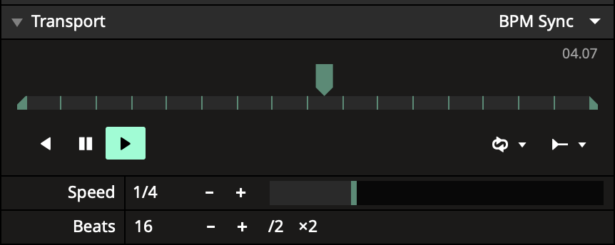
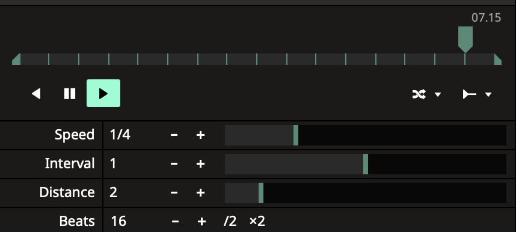

Audio-DNA — all the questions
2026-10-05 · one page with everything open
What this page is. Everything still open about how the app is to work, and everything I understood so far. Readings come first inside each topic, then its questions. It holds 45 questions and 102 readings, in 3 parts; you need not do it in one sitting.
You wrote: "ask me questions about anything that is unclear when you are ready". This page is that: every open question about how the app is to work, across the whole app, and everything I understood so far (the readings).
How to answer a question: its number and a letter, for example "172 a". If none of the letters fits, write the number and a sentence. This time silence is not an answer: a question you do not answer stays open, and nothing that depends on it is built. If you want every default, one line is enough: "all defaults good".
Every default carries a tag that says where it comes from: [your words], [Resolume says so] (its manual, its own video or its team), [Resolume, my guess], [as today] or [mine]. "All defaults good" also accepts every [mine] and every [Resolume, my guess]: look at those first. A tag that ends in "+ mine" means that the default is partly your words (or Resolume's, or today's way) and partly my own addition; "all defaults good" accepts that part too, like any [mine].
How to answer the readings: correct the ones that are wrong. Where a reading has letters you can correct one line of it ("R193 c no", with a sentence if you like); some readings offer a short word ("R130 off"). When the rest are right, write "readings ok".
A reading says how it will work once it is built. Only a sentence that says "today" describes the app as it is now. "Mine:" marks my own addition, not your words and not Resolume's. Many readings hold a part marked "Mine:". In these 26, my part changes most what you or the audience see on stage: R128, R129, R131, R139, R149, R151, R158, R160, R161, R163, R168, R172, R174, R176, R181, R186, R189, R190, R193, R194, R199, R205, R210, R213, R214, R228. Look at those first; every other "Mine:" is marked where it stands.
A reading that begins "Stays as it is" lists only things that stay; what changes there has a reading of its own, which it names. A reading that begins "These stand" or "Standing" repeats what you answered or were told on earlier pages; where it then says "Mine:", that part is new.
Where you said to emulate Resolume, the reading begins "As in Resolume" and says whether its manual states it or I worked it out. Eight looks in your own Arena would settle my guesses: they are listed in R206.
Nothing is being built. Your words: "Don’t build anything till all questions are answered and you are 100% sure of what everything means." and "Let’s get on the same page first with questions and answers." And later the same day you wrote: "take your time and we will build when all the functionality details are fully understood". So you answer over as many sittings as you like; nothing is built until you say that all is clear, and the build starts in the session after that (your words: "After all is clear, then the following session you will start building the app and not before that.").
It is long: 102 readings and 45 questions, in three parts. My guess is about three hours and 20 minutes in all: Part 1 about an hour and 50 minutes, Part 2 about an hour and 5 minutes, Part 3 about 15 minutes, and a few minutes for the lists at the end. Part 1 is what the first builds stand on (firing clips and the tempo row, the cue system, presets, actions, the review screen): answer it first, and stop there if you like. Part 2 is the rest of what is being changed (the show file and decks, output screens, how a clip plays, effects and signals, the keyboard and MIDI mapping). Part 3 is what exists today and stays unless you say otherwise: almost all readings.
The questions that hold up each of the first builds: the tempo row 172 to 175 and 189 to 191; the cue system 176 and 177; presets 178 and 192; actions 179 to 185, 193, 194 and 213; the review screen 186 to 188, 195 and 216.
To change only a few answers, copy this line and change the letters: 172 a, 173 a, 174 a, 175 a, 176 a, 177 a, 178 a, 179 a, 180 a, 181 a, 182 a, 183 a, 184 a, 185 a, 186 a, 187 a, 188 a, 189 a, 190 a, 191 a, 192 a, 193 a, 194 a, 195 a, 196 a, 197 a, 198 a, 199 a, 200 a, 201 a, 202 a, 203 a, 204 a, 205 a, 206 a, 207 a, 208 a, 209 a, 210 a, 211 a, 212 a, 213 a, 214 a, 215 a, 216 a.
Where things sit and how they look is not asked here: it comes next as pictures (the list is near the end).
Where each question and each reading is
The numbers do not run in one line down the page: questions 172 to 188 were written first, from your answers of today, and the others were added when I went through the whole app, topic by topic. Where each question is: A 172-175, 189-191; B 176, 177; C 178, 192; D 179-185, 193, 194, 213; E 186-188, 195, 216; F 196-198; G 199, 200; H 201, 202; I 203-205; J 206-210, 214; K 211, 212, 215.
Where each reading is: A R128, R168, R139, R140, R142, R163, R169, R164, R174, R175, R176, R214, R215, R216, R177, R178, R205, R206; B R141, R149, R150, R151, R152, R153, R170, R179; C R136, R127, R154, R155, R171, R156, R157, R180, R207; D R133, R134, R172, R158, R144, R159, R129, R130, R131, R132, R160, R161, R145, R162, R146, R143, R147, R181, R182, R224; E R138, R165, R173, R137, R135, R166, R222, R167, R183, R184, R185, R186, R187, R223, R208; F R188, R189, R190, R225; G R191, R209, R226; H R192, R217, R218, R193, R194, R219; I R195, R210, R220, R221, R196; J R148, R197, R198, R199, R227, R200; K R201, R211, R228, R202, R212, R203, R213, R204.
Index
- Part 1 — What the first builds stand on (26 questions)
- A Firing clips and the tempo row — 7 questions: 172, 173, 174, 175, 189, 190, 191
- B The cue system — 2 questions: 176, 177
- C Presets — 2 questions: 178, 192
- D Actions in a show — 10 questions: 179, 180, 181, 182, 183, 184, 185, 193, 194, 213
- E The review screen and recordings — 5 questions: 186, 187, 188, 195, 216
- Part 2 — The rest of what is being changed (16 questions)
- F The show file, decks and saving — 3 questions: 196, 197, 198
- G Output screens — 2 questions: 199, 200
- H How a clip plays — 2 questions: 201, 202
- I Effects, signals and what moves a slider by itself — 3 questions: 203, 204, 205
- J The keyboard and MIDI mapping, menus and messages — 6 questions: 206, 207, 208, 209, 210, 214
- Part 3 — What exists today and stays unless you say otherwise (3 questions)
After the parts: decided without asking you, what comes next as pictures, what I told you in chat, the defaults you accepted.
Part 1 — What the first builds stand on
26 questions and 70 readings
A Firing clips and the tempo row
What I understood — correct only what is wrong
- R128★ look first154 (a) A clip in BPM mode that you fire in the middle of a bar starts playing on the next "1" (the first beat of the next bar), by itself. A clip that is not in BPM mode starts on your press. (b) Once this is built there is no Snap box on a clip and no Quantize setting for firing clips live (the review screen has its own Quantize, R166). (c) In Resolume the wait is a separate setting, Beat Snap; in your app BPM mode itself does it: your words. Mine: (d) fire the clip that is already playing and it plays on, then starts again from its beginning on the next "1"; (e) a click on a column starts its BPM-mode clips on the next "1" and the others on your click. What the layer shows while the clip waits: question 173.Changed: Adds the re-fire and the column (mine); the open point became question 173.
- R168★ look first154: while a clip waits Mine, no word of yours covers it: (a) while a BPM-mode clip waits for the "1", a newer fire on the same layer takes its place (the last press wins). (b) The layer's X, or a click on an empty cell, ends the wait and clears the layer at once, in the middle of a bar too: an empty cell has no BPM mode, so it does not wait. (In Resolume an empty cell waits too; I do not copy that: it would leave a layer playing for up to a bar after you clear it.) (c) Press the waiting clip again and nothing changes: it keeps waiting for the same "1". (d) If the old clip plays on meanwhile (173 A), the layer's fade to the new clip starts on the "1".
- R139★ look firstR111 Your sentence has two halves. (a) STOPPED: you fire a clip and the beat starts ("it starts playing the beat"). Mine: (b) your press is the "1"; the clip plays from its beginning; any clip does this, in BPM mode or not, fired by a click, a key, a MIDI pad or a column; a click on an empty cell starts nothing; play and Resync still start the beat too. (c) PAUSED: a video or picture sequence you fire shows and does not play ("it will not play but will still display"). Mine: (d) it stands on its first frame; when you press play the beat runs on from where it was held, and a BPM-mode clip starts on the next "1" (your 154); when the beat was held at its start, your play press is that "1". A picture without playback (a still, a generated picture, MilkDrop): R193 b. This replaces the old R111. How this goes with your show start: question 172. While the beat runs, whether a waiting clip is seen: question 173. A clip that is not in BPM mode under pause: question 174. What tempo the very first fire runs at: question 175.Changed: Splits your sentence into its stopped half and its paused half, and marks what I added. Says which clips the paused half is about (those with playback); the others are in R193 b.
- R140show start Your show-start sentence, as I read it: "press start" is the play button of the tempo row; "load up the clips" is firing them while the beat does not run, so that they stand ready; the column is the other way to start them all at once; "cue them ahead of time" is looking at them in the preview monitor first (R149 says how). Whether I read it right: question 172.Changed: Now says how I read each part of your sentence.
- R142R114 As you said: a clip you paused is still paused after you save the show, quit and open it again. That pause is saved (it was already ruled so, your 122 a). Today it is not saved: after you re-open a show, the clip plays when you fire it.Changed: Now in your own words; the tempo row's part is in R163. Adds that the pause is not saved today.
- R163★ look firstR114: the beat when the app or a show opens When the app starts, the beat is stopped and waits for you: until your first fire, play or Resync the circle stands still, and everything that follows the beat stands on the "1" (R214). On an earlier page I told you the opposite, that the app opens with the beat running, as it does today once it has found the tempo in the music; your "press start" made me change it. Say "R163 running" if the app should open with the beat running. Opening a show never changes the beat: stopped stays stopped, running keeps running, and the tempo number stays as it is. As today, a show holds no tempo number and nothing of the tempo row's play, pause or stop; of the tempo row it holds only the nudge amount (your 63; the "/2" and "x2" buttons: R215). The action buttons open as you saved them (R132), but no action plays until the beat runs (R158).
- R169the tempo row with Ableton Link on As in Resolume (a reply of its team from 2023, not its manual): with Ableton Link switched on, the tempo row's pause and Resync are greyed out, because they would move the beat that the other programs share. Mine: play is greyed out too; a fire never starts or moves the beat, because the beat is Link's and always runs; stop still takes the clips off the layers and leaves the beat running. Link is off unless you switch it on.
- R164the DJ tracks (a) The three DJ tracks you are bringing are for measuring how well the app finds the "1" in real music. One part of the BPM-mode work waits for them, and so does how far you can rely on the "1" while the app listens by itself. (b) The "1" your clips wait for: while the app listens to the music (Manual off) it finds the "1" itself, it can be wrong, and it counts the bars afresh after a drop or a breakdown (seen in how the app is built); when you press Resync the "1" is yours and stays (question 189 A). The tracks measure how often the app finds it right.
- R174★ look first154 and R111: the edges Mine, the edges of your 154 and of R111 that no word of yours covers. (a) A clip you paused yourself does not wait: it shows at once on its paused frame, because nothing in it moves. (b) While a BPM-mode clip waits and you press Resync, your press is the "1" and the clip starts then; "/2", "x2", a tap or a typed tempo move the "1" it waits for; stop takes it away with everything else; pause holds the wait, and the clip starts on the first "1" after the beat plays again. (c) Every BPM-mode clip waits, a clip set to Play Once too: a clip you want to punch in on your press is not put in BPM mode (in Resolume the wait is a setting of its own; your 154 makes it part of BPM mode). So a hit that must land on your press cannot also follow the tempo; if you want both, say "R174 c split" and I will ask. (d) A press that starts a stopped beat (R139) leaves the nudge number as it is; only Resync sets it to 0 (your 129 b). The "1" a clip waits for is the nudged "1", like everything else on the beat (R177). A pad you hold and let go before the "1": question 207.
- R175earlier words that a later word of yours replaced Four earlier things are replaced by later words of yours; I list them so that nobody builds the old one. (1) Your 123 b (a clip fired between two "1"s starts at once and is cut back to its beginning on the next "1") no longer holds for firing a BPM-mode clip: by your 154, said later, it waits and starts on the "1". 123 b and 71 b still hold for a clip that falls out of time while it plays, after a tempo change: it plays on and is cut once on the next "1"; a Resync cuts it at once (121 a). (2) Your 128 named Resync as what starts a stopped beat; by your later reply to R111 a clip you fire starts it too (R139). (3) On the tempo-row page I told you that the app opens with the beat running; R163 replaces that: the beat is stopped and waits for you. (4) Your words of 2026-10-03, that a clip is held to the line "if we are in Qantize mode", fell away when you took Quantize out of live use on 2026-10-04.
- R176★ look firstthe tempo row: what stands from earlier pages These stand from earlier pages: you answered them, or I told them to you and you did not correct them. Say so if one is wrong. (a) Stop: one press; every clip leaves every layer; the beat stops and the tempo number is not lost (R214 d). Mine, never shown to you: a layer set to Ignore Column Trigger is cleared too, so a logo you keep on such a layer goes with a stop. Say "R176 a keep" if Stop should leave those layers alone. (b) Pause holds the beat and the BPM-mode clips; no button pauses every clip at once any more (you chose 136 b, not the option where every clip holds), and each clip keeps its own pause. Today the top bar's "||" pauses every playing clip; it goes with the three old buttons, and the tempo row's play, pause and stop take their place (your r85). (c) "-" and "+" step the tempo by 1 BPM, in whole numbers. (d) A tempo set by hand can run from 30 to 400; "/2" is greyed below 60 and "x2" above 200. (e) The nudge: plus moves the beat earlier; the text reads "nudge X ms"; one press is 1 ms, a held press repeats, a number can be typed; it runs from -500 to +500; pause never touches it. (f) A tap never starts the beat. (g) The words "Bar 1" to "Bar 4" are gone; the circle alone shows the beat.
- R214★ look firstwhat stands still while the beat does not run; the tempo number meanwhile Mine, from the tempo row as it is planned (today the app has no stop and no pause of the beat). (a) Stop: the circle stands on the "1" and every clip leaves. Everything that follows the beat stands on the "1" until the beat runs again: signals that run on the beat (oscillators, envelopes), sliders and effects driven by the beat, actions, the autopilot's count, MilkDrop's Jukebox count. (b) Pause: the same things stand where they were; a clip that is not in BPM mode plays on (your 136 b). (c) In both, what the music itself drives (loudness, bass, tones) keeps moving. (d) The tempo number: while the app is listening (Manual off) it keeps following the music, also while the beat is stopped or paused, so your first fire of the next song starts the beat at that song's tempo; with Manual on it holds what you set. Say "R214 d hold" if the number should freeze while the beat does not run.
- R21562: the buttons beside the tempo number Your row (your 62) has only "/2" and "x2". Today there are five buttons beside the tempo, "/4" "/2" "x1" "x2" "x4", and they change nothing: the app keeps which one you pressed, the show even saves it, and nothing uses it (seen in how the app is built). So the five go and two come: "/2" halves the tempo number and "x2" doubles it, once per press, as in Resolume's row; neither moves the "1" (told to you earlier and not corrected); "/2" is greyed below 60 and "x2" above 200 (R176 d). Nothing of them is saved with a show.
- R216147 a: effects that hold or trail a picture after a stop You answered 147 a: when stop takes every clip off, an effect that holds or trails a picture goes on doing what it does: an Echo or feedback trail fades out by itself, and a frozen picture stays until you switch that effect off. Today it is not so: with no clip playing the global effects do not run and the screen goes dark at once (seen in how the app is built, not run). It is built with the stop. Apart from that, with no clip playing the output is black (R228).
- R177the nudge and a screen's Delay Two controls bring picture and sound together, and they do different jobs. A screen's Delay (0 to 100 ms, one per output screen) makes everything on that screen later: it is for the room, the distance from the speakers to where you stand. The nudge moves where the "1" sits, earlier or later, for everything that runs on the beat: it is for a beat that sits a little off the music. Your show keeps its nudge amount (your 63), and a Resync sets the nudge to 0 (your 49). Together that means: a nudge saved with a show lasts until your first Resync of the night. Say so if a saved nudge should come back after a Resync. A Delay can only make a screen later, as in Resolume; your earlier "a little ahead" now exists only as the nudge, for what runs on the beat. What follows the loudness of the music cannot be moved earlier.
- R178Ableton Link Ableton Link: in the app as it is built for you today the Link switch is dimmed (your copy is built without Link), and you have never mentioned it. It stays that way and nothing new is built for it. If it is switched on one day, R169 says what the tempo row does. Whether you use Link: question 215 (b).
- R205★ look firsta column click and the empty cells in it A click on a column also clears every layer whose cell in that column is empty; only a layer set to Ignore Column Trigger is left alone. A click on one empty cell does the same for its layer (R168). The app works this way today, and you have never been shown it. I believe Resolume does the same (not checked: one column click in your Arena shows it, R206). Say "R205 leave" if a click on a column should leave a layer playing when its cell in that column is empty.
- R206eight looks in your Arena Not something I understood, but eight looks that only your Arena can give me. Each takes a minute, none holds up this page, and each settles a guess of mine. (a) Click a clip's name: does the clip play and loop in the lower monitor, or stand still? (R151) (b) Fire a clip with the tempo bar paused, and again with it stopped: what happens? (R139, question 172) (c) Tap a tempo while a clip plays: does the beat jump to your tap, or does only the number change? (question 190) (d) Click a column in which one layer's cell is empty while that layer plays: does that layer go empty? (R205) (e) Random on a clip in BPM Sync: does a jump land only on the first beat of a bar, or on any beat? (question 201) (f) On a clip in BPM Sync, click "+" on Speed and on Duration and send me the numbers; in Timeline mode set Speed 2 and send the Duration it shows. (g) One picture: the "Manage..." window of an effect's presets, open (R155). (h) Press B (bypass) on a layer while its video plays, wait a few seconds, press B again: did the video play on out of sight, or did it stand still? (R194 d)
Questions
172.
How a show starts: pause, load the clips, play
A show is about to start. The beat is stopped and the layers are empty. You want three BPM-mode clips, one on each of three layers, to start together on the first beat of the music. A click on a column does that in any case. This is about the other way, your "load up the clips and press start".
Your words:
R111 if I fire a clip while the beat is stopped, it starts playing the beat. When paused, it will not play but will still display.
The way to set up / cue up for a show start is to load up the clips and press start, or click on a column to trigger all of them at the same time and cue them ahead of time via the cue system which I am about to describe.
ADEFAULT You press pause first: the beat is paused at its start. Each clip you fire now shows on its first frame and waits. You press play on the first beat of the music: that press is the "1" and all three start.
[your words + mine] It is your two sentences read together: stopped, a fire starts the beat; paused, a clip you fire shows and does not play. So "load up the clips and press start" is the paused way. Mine: that pause can be pressed on a stopped beat and holds it at its start; the app has no stopped or paused beat today.
B There is no paused start: from stop, the first clip you fire starts the beat and plays. "load up the clips" then means filling the clip grid, and "press start" starts the beat with nothing playing yet.
Why it matters: It decides how every show of yours begins, and the tempo row is built on it. Whether a clip that is not in BPM mode would also wait under A is question 174. Either way you can also start with the faders down and bring them up (R149).
173.
What the layer shows while a BPM-mode clip waits
The beat is running. A clip plays on layer 2. Half-way through a bar you fire another clip of layer 2 that is in BPM mode.
Your words:
154 a clip that has BPM mode enabled will start playing on the next 1 if it is triggered in the middle of a bar. This is automatic quantization that is implied when the clip has BPM mode.
ADEFAULT The old clip plays on until the "1"; then the new one takes over and starts. On an empty layer nothing shows until the "1". The new clip's cell shows that it is waiting.
[Resolume says so] As in Resolume when a clip waits for the bar (its manual: "at the start of the next bar, the output will change to play the new clip"), and your own word for it is quantization.
B The new clip shows at once, standing on its first frame, and starts moving on the "1". The old clip is gone at your press.
Why it matters: With B the audience sees a frozen picture for up to a bar each time you fire a BPM-mode clip; with A they keep seeing the old clip (or nothing) until the "1".
174.
A video not in BPM mode fired while paused
The beat is paused. You fire a video or a picture sequence that is NOT in BPM mode.
Your words:
R111 if I fire a clip while the beat is stopped, it starts playing the beat. When paused, it will not play but will still display.
136 b
ADEFAULT It shows on its first frame and plays when the beat plays: while the beat is paused, no video or picture sequence you fire moves, whatever its mode. Your sentence as written. (Pictures without playback, such as MilkDrop: R193 b.)
[your words] Closest to your words: your reply to R111 names no mode ("When paused, it will not play but will still display."), and it took the place of a text of mine that said such a clip plays at once.
B It plays at once. Pause holds only the clips in BPM mode (your 136 b): a clip that is not in BPM mode and was already playing plays on through the pause anyway.
Why it matters: Your answer 136 b means: a pause holds the BPM-mode clips, and a clip that is not in BPM mode plays on. With A, such a clip plays on if it was already playing but waits if you fire it during the pause. With B you cannot stand it ready for a show start (question 172).
175.
The tempo of the very first fire
You have just opened the app. No music has played yet and you have not tapped or typed a tempo, so the app has no tempo number. You fire a clip.
Your words:
135 the beat stops but tempo is not lost, just not playing
ADEFAULT The tempo number is never empty: the app opens at the tempo you used last (120 the very first time). Your fire starts the beat at that number; the music, a tap or a typed number then corrects it.
[mine] Least surprise, and your own rule for a stopped beat: "the beat stops but tempo is not lost, just not playing".
B No tempo, no beat: the tempo row shows no number until the app finds the tempo in the music or you tap or type one. Until then a BPM-mode clip you fire shows on its first frame and waits; other clips play.
Why it matters: It decides what the first press of every night does. Today the app has no tempo until it has heard enough music (seen in how the app is built).
189.
Your hand against the app's listening (Manual)
The app is listening to the music (the tick box "Manual" is off) and shows 126. You know the track is 128: you tap it, or you press "+" twice, or you press Resync on the "1" you hear.
Your words:
R76 please explain wha tit means to switch manual on
128 tapping tempo does not start anything but when click resync, that is the 1 and it begins on that button push
ok what is your question about r76 having to do with manaul?
ADEFAULT Your hand holds. Any of these switches Manual on: the number and the "1" stay where you put them until you switch Manual off again. This is what "switch Manual on" means: the app stops correcting you.
[your words + mine] Closest to your words: tapping sets the tempo, Resync is the "1". It is also the only way your press is still true ten seconds later.
B As today: Manual stays off. The app takes your tap or your "1" for a moment, and within about two seconds its own listening moves the number and the beat back if it hears something else.
C The tempo steps and a typed number switch Manual on; Tap and Resync do not: they help the app's listening for a moment, and it carries on.
Why it matters: Today, with Manual off, the app puts the beat back on every beat it is sure of and replaces a tapped tempo after about two seconds (seen in how the app is built). You asked what "switch Manual on" means; this is the place where it matters. What the number does while the beat is stopped or paused: R214.
190.
Tap: the tempo only, or the beat too
The beat runs. You tap along with the music for a few beats to set the tempo.
Your words:
128 tapping tempo does not start anything but when click resync, that is the 1 and it begins on that button push
If I tapped the tempo again, to set the tempo, the time does not change. If I press re-sync, then it does re-sync and that changes by how far off the beat we are.
ADEFAULT Tap sets only the tempo. Where the "1" sits does not move; you place it with Resync.
[Resolume, my guess] Resolume's manual gives Tap the tempo and Resync the first beat of the bar; it does not say in so many words that Tap leaves the beat alone (one tap in your Arena shows it: R206). It also fits your words: a tap starts nothing, Resync is the "1".
B As today: from the second tap on, every tap also pulls the beat onto your tap, but not the "1": the lit quarter of the circle can then disagree with your tap.
C Tap sets the tempo, and the first tap of a run is also the "1", as a Resync would be. While the beat is stopped a tap still starts nothing.
Why it matters: On an earlier page I told you that tapping puts the beat on your taps, as today, and you did not correct it; Resolume's manual does not say that a tap moves the beat, so I take it that it does not (one tap in your Arena shows it: R206). With A you need one Resync press after you tap in a new track.
191.
A column that holds both kinds of clips
The beat runs. Half-way through a bar you click a column that holds two BPM-mode clips and one clip that is not in BPM mode.
Your words:
The way to set up / cue up for a show start is to load up the clips and press start, or click on a column to trigger all of them at the same time and cue them ahead of time via the cue system which I am about to describe.
154 a clip that has BPM mode enabled will start playing on the next 1 if it is triggered in the middle of a bar. This is automatic quantization that is implied when the clip has BPM mode.
ADEFAULT Each clip follows its own rule (R128): the clip that is not in BPM mode starts on your click, the two BPM-mode clips start on the next "1". For up to a bar the column is only partly there.
[your words] It is your 154 applied to each clip, and a clip that is not in BPM mode waits nowhere else.
B The whole column waits: if any clip in it is in BPM mode, all of them start together on the next "1".
Why it matters: Your show-start sentence says a column triggers "all of them at the same time". From stop that is true either way, because your click is the "1". This is the case where it is not. In Resolume 7.22 a column has a Beat Snap setting of its own; how it meets a clip's own setting is not documented.
B The cue system
What I understood — correct only what is wrong
 R141cue system A preview monitor sits just below the output monitor. Under it, one cue button per layer; any number of them can be on. The layers switched on there show in the preview mixed together, with their blend modes, in layer order, as they would mix in the output, except that each cued layer's own fader is ignored (R149 a) (with or without the global effects: question 177). Nothing you do there ever changes the output. This part is yours and not Resolume's: in its monitor menu you pick one layer or one group at a time, or the A or the B side of its crossfader (your picture: its green dot sits on one entry, "Selected Clip"; the second dot is the switch of the Transform Widget); a Resolume reply of 2015 says previewing several layers together is not possible, and I found nothing newer. A click on a clip's name: R150 and R151.Changed: Adds that several cue buttons can be on at once and that the output is never touched. The picture has two green dots; the reading now says which is which. Says that a cued layer ignores its fader, and names the crossfader entries of Resolume's menu.
R141cue system A preview monitor sits just below the output monitor. Under it, one cue button per layer; any number of them can be on. The layers switched on there show in the preview mixed together, with their blend modes, in layer order, as they would mix in the output, except that each cued layer's own fader is ignored (R149 a) (with or without the global effects: question 177). Nothing you do there ever changes the output. This part is yours and not Resolume's: in its monitor menu you pick one layer or one group at a time, or the A or the B side of its crossfader (your picture: its green dot sits on one entry, "Selected Clip"; the second dot is the switch of the Transform Widget); a Resolume reply of 2015 says previewing several layers together is not possible, and I found nothing newer. A click on a clip's name: R150 and R151.Changed: Adds that several cue buttons can be on at once and that the output is never touched. The picture has two green dots; the reading now says which is which. Says that a cued layer ignores its fader, and names the crossfader entries of Resolume's menu.- R149★ look firstcue system: the fader (a) A cued layer shows in the preview at full strength wherever its fader is, the way a DJ hears a cued track with the channel fader down (Resolume's layer monitor does the same: worked out from two replies of its team, not stated in its manual). (b) You see the layer's clip with the clip's effects and the layer's effects. Mine: (c) the layer's B (bypass) and S (solo) buttons do not change what the preview shows, only the cue buttons do (what Resolume does there is not known); (d) the cued layers are mixed among themselves only, the lowest one drawn as it is and the others blended onto it, so one cued layer alone shows its own picture whatever its blend mode; (e) a cued layer that is empty adds nothing. (f) This is how you cue ahead of time: faders down, fire the clips or the column, cue the layers, look, then bring the faders up. (g) Mine: the master fader and the composition's position, scale and rotation are never on the preview, whatever you answer to 177; a layer's own Feedback is part of the layer and shows.
- R150cue system: name and thumbnail As in Resolume (its manual says so): a click on a clip's name selects the clip without firing it, so the Clip tab shows its settings and you can change them before it is live; a click on its thumbnail fires it. The app already works this way today. New: the name click also shows the clip in the preview monitor (as Resolume's own video shows). One thing goes: today a name click on a picture or a procedural clip can also put it on the main picture, and so on the outputs, while nothing is playing (seen in how the app is built, not seen running). A name click will only select and preview.
- R151★ look firstcue system: a previewed clip As in Resolume (worked out from its old manual and from its users; its present manual has no sentence on it): a clip you preview by its name plays in the preview monitor, it is not a still, with its own effects, without the layer's fader and without the master, at the clip's own Opacity setting; previewing never fires it and never changes the output. Mine: it starts from its beginning and loops, and a BPM-mode clip follows the tempo there too; a clip that is playing in the output at that moment shows in the preview at the same moment of its playback, because it is the same clip seen twice. Mine: a clip you preview by its name plays in the preview also while the beat is stopped or paused, at the tempo number, the way a DJ hears the cued track while the room hears nothing; a cued layer shows what the layer itself holds, so a clip that stands still in the output stands still there too. Say "R151 still" if a previewed clip should stand on its first frame while the beat does not run.
- R152cue system: the buttons Mine, no word of yours covers it: the cue buttons belong to the night, not to the show. They are not saved, and the app opens with none on. With none on and no clip previewed, the preview monitor shows black. A cue button can be put on a key or a MIDI pad in the keyboard and MIDI mapping: you chose that for action buttons (166 A), and I assume the same for cue buttons. A recording never keeps a cue press, and an action never presses one.
 R153cue system: the names Names: in your Resolume pictures the two monitors are titled "Composition Monitor" and "Clip Monitor"; "Preview" is one entry in a monitor's menu (I take it to be the lower one's: its green dot is on "Selected Clip"). In your app they are the output monitor and the preview monitor, your words. Today's panel has two small buttons at its top, "Preview" and "Output", that only change colour and show the same picture: they go. Mine: nothing else of Resolume's monitor menu (Selected Clip, Crossfader, Snapshot, Copy Image, Transform Widget) is copied; your cue buttons take its place. There is no A / B crossfader in the app and none is built.
R153cue system: the names Names: in your Resolume pictures the two monitors are titled "Composition Monitor" and "Clip Monitor"; "Preview" is one entry in a monitor's menu (I take it to be the lower one's: its green dot is on "Selected Clip"). In your app they are the output monitor and the preview monitor, your words. Today's panel has two small buttons at its top, "Preview" and "Output", that only change colour and show the same picture: they go. Mine: nothing else of Resolume's monitor menu (Selected Clip, Crossfader, Snapshot, Copy Image, Transform Widget) is copied; your cue buttons take its place. There is no A / B crossfader in the app and none is built.- R170cue system: what Resolume can do and the first build does not As in Resolume (its manual says both): a monitor can be undocked into a window of its own and dragged onto a second screen, and a file can be previewed from the Files tab by a double-click. Your words ask for a preview monitor below the output monitor, and for the click on a clip's name "to preview clips before adding them to the layer strip", which I read as: before firing them. So in the first build the preview monitor is in the main window only, and it shows cued layers and clips that are in the clip grid, not files in the Files tab. Say so if you want either of the two in the first build.
- R179cue system: the edges Mine, no word of yours covers these. (a) A cued layer shows in the preview what the layer itself holds: while a clip waits for its "1" on that layer, the preview shows what the layer shows in the output (question 173) and not the waiting clip; to look at the waiting clip, click its name. (b) A layer's actions show in the preview of that cued layer, because it is the same layer seen twice. (c) A clip that is not playing and that you preview by its name is shown without its actions: they play when the clip plays. (d) The clip's eight jump points in the Clip tab keep their name "Cuepoints"; everywhere else "cue" means the cue buttons under the preview monitor.
Questions
176.
A clip's name clicked while layers are cued
Layers 1 and 2 are cued and show mixed in the preview monitor. You click the name of a clip of layer 3, to look at it before you fire it.
Your words:
Also, when a user clicks on the bottom of a clip, where its name is, it is displayed in the preview monitor. I want this behavior as well to preview clips before adding them to the layer strip.
exactly how a DJ mixer allows the user to cue and listen to how the tracks would be mixed together before they mix them
ADEFAULT The clip takes the whole preview monitor, alone. The cued layers come back when you fire any clip, press a cue button, or click that name again.
[Resolume says so + mine] As in Resolume: a previewed clip is shown outside the composition (its own video says so), and the clip preview is cleared when a clip is fired by hand (a reply of its team, 2018). Coming back by a cue button or by the name is mine.
B The clip is shown inside the cued mix, as if it were already playing on layer 3: you see how it will look together with layers 1 and 2. It leaves the preview as in A.
Why it matters: A shows the clip by itself. B shows the mix you are about to make, which is your DJ picture, but it is not what Resolume does.
177.
Global effects in the preview
You have effects on in the global tab, and you cue two layers.
Your words:
exactly how a DJ mixer allows the user to cue and listen to how the tracks would be mixed together before they mix them
ADEFAULT The preview shows the cued layers with their own clip effects and layer effects, mixed. The global tab's effects are not on it: you see the layers before the global effects are added.
[Resolume, my guess] A DJ's cue is taken before the master; Resolume's layer monitor also appears to leave the composition's effects out (worked out; not stated in its manual).
B The preview runs the cued mix through the global tab's effects too, so that it looks the way it would on the output.
Why it matters: With A the preview can look different from what the audience will get when your global effects are strong. With B the preview costs more to draw, and effects that remember earlier pictures (trails, echo) can only be approximated in it (my reading of the code, not tested; the same holds for a layer's own Echo or Feedback under A).
C Presets
What I understood — correct only what is wrong
 R136169, presets As in Resolume: (a) on an effect you read the effect's name, as today (your picture and its manual). One thing moves: today the small "B" sits at the left of the name; in your picture the fold arrow is at the left and B sits at the right, with the "P" and the "X" beside it. I take it that B moves there. (b) At the right end of that same row there is a small "P" with an arrow, between B (bypass) and X (remove). I take it to be the effect's preset button: the open menu in your picture hangs right above it, and Resolume's manual speaks of "the Preset drop down above the effect parameters". Its drop-down reads: Default, your presets, a line, "Manage...", "Save". (c) In the effects tab (it reads "FX" on screen today) an effect that has presets gets a fold arrow and its presets are listed under it (its manual says so); an effect with none shows no arrow in your picture. What the button reads: question 178.Changed: Adds where the button sits, which effects get an arrow, and what of it I worked out. Adds that the B button moves to the right end of the row, as in your picture.
R136169, presets As in Resolume: (a) on an effect you read the effect's name, as today (your picture and its manual). One thing moves: today the small "B" sits at the left of the name; in your picture the fold arrow is at the left and B sits at the right, with the "P" and the "X" beside it. I take it that B moves there. (b) At the right end of that same row there is a small "P" with an arrow, between B (bypass) and X (remove). I take it to be the effect's preset button: the open menu in your picture hangs right above it, and Resolume's manual speaks of "the Preset drop down above the effect parameters". Its drop-down reads: Default, your presets, a line, "Manage...", "Save". (c) In the effects tab (it reads "FX" on screen today) an effect that has presets gets a fold arrow and its presets are listed under it (its manual says so); an effect with none shows no arrow in your picture. What the button reads: question 178.Changed: Adds where the button sits, which effects get an arrow, and what of it I worked out. Adds that the B button moves to the right end of the row, as in your picture.- R127150: the small Save button The small Save button of your answer 150: (a) it shows beside the preset button the moment the effect's sliders no longer match its preset, and goes away when they match again. (b) It shows on an effect that reads "Default" and never had a preset too: your answer 150 was about exactly that effect, so nearly every effect you touch will carry it. (c) That sets aside your 133 ("no need to show that it was changed") for this one button; the preset's name itself still stays after a change and gets no mark (whether a name is shown at all: question 178). (d) Press the button: a small window asks for a name and already holds the next free one ("Preset 3"; your 104). Press Save: a NEW preset is kept under that name; the effect then has the new preset loaded and reads its name (178 A), and the Save button goes away until a slider moves again. (e) Type the name of a preset that exists: the window asks first, then saves over it (your 103 and 132). Say so if you want the Save button only on effects that carry one of your own presets.Changed: Adds the window's starting name, what an existing name does, and the Save button on a "Default" effect. Adds what the effect reads after Save and when the button goes away.
 R154presets: dragging one As in Resolume (its manual says so): you drag a preset from the effects tab onto a clip, a layer or the global stack, the same way as the effect itself. Worked out, not stated in its manual: the effect arrives under its own name, set to the preset's values, and dragging the effect itself brings it at its defaults. Mine: a click on a preset in the tab only selects it for dragging; a double-click on a preset or on an effect does nothing in the first build (in Resolume a double-click on an effect shows it in its preview monitor, and what it does on a preset is not known; here the preview monitor shows clips and cued layers only, and an effect is judged on the output); a preset you drop is always added as a new effect and never changes an effect that is already there.
R154presets: dragging one As in Resolume (its manual says so): you drag a preset from the effects tab onto a clip, a layer or the global stack, the same way as the effect itself. Worked out, not stated in its manual: the effect arrives under its own name, set to the preset's values, and dragging the effect itself brings it at its defaults. Mine: a click on a preset in the tab only selects it for dragging; a double-click on a preset or on an effect does nothing in the first build (in Resolume a double-click on an effect shows it in its preview monitor, and what it does on a preset is not known; here the preview monitor shows clips and cued layers only, and an effect is judged on the output); a preset you drop is always added as a new effect and never changes an effect that is already there.- R155presets: Save and Manage... As in Resolume (worked out: its manual says that "Save" opens a window where you type a name, and shows "Manage..." for its other preset menus, not for effects): (a) in the drop-down, "Save" does the same as the small Save button (R127), and "Manage..." opens a small window that lists this effect's presets, where you rename or delete one. Mine, and only if the effect remembers its preset (178 A or C): (b) Rename = every effect of the open show that carries the preset reads the new name, and so does the effects tab; (c) Delete = those effects read "Default", keep their settings (and so show the Save button), and the preset leaves the tab. (d) "Default" is always first in the drop-down, puts the effect back to its defaults, and is not listed in the tab.
- R171presets: a preset that is not on this computer Mine (it takes the place of the note in the old R121), and only if the effect remembers its preset (178 A or C): when the preset an effect carries is not on this computer (the show was opened on another computer, or the preset was renamed or deleted while this show was closed), the effect keeps its settings and reads "Default". The show still keeps the name: on a computer that has that preset the effect reads it again. One thing to know: if you later make a new preset under that same name, such an effect will read it as its own.
- R156presets: what is not copied Two things in your picture I do NOT copy unless you say so: the second small "P" at the end of the "Blend Mode" row (in Resolume that appears to be a preset menu for that one row), and the menu's title "Arena Presets" (Resolume's own name on its menu; your app ships no presets of its own, your 101).
- R157presets: what stays From your words: presets are kept with the app on this computer, not inside a show ("these are saved with the app. always."); a preset holds each slider's value, Dry / Wet, and the signal plugged into each slider (your 102 b). My plan, not yet told to you: loading a preset is one Undo step; the show keeps the name of the preset an effect carries (only if the effect remembers it, question 178).
- R180presets: signals, an empty cell, and a reading your picture replaced Mine. (a) A preset remembers a plugged-in signal by its name only ("Mod 1", "Bass"). Presets belong to the app and the shapes of your own signals belong to the show (R188), so one preset can pulse differently in a show where "Mod 1" has another shape. (b) A preset dropped on an empty cell makes an effects-only clip with that preset loaded, as dropping the effect itself does today. (c) One earlier reading is replaced: I had read your answer to 138 as: presets are picked only from an effect's own button, and none are listed in the effects tab. Your effects-tab picture, sent later, replaces that (R136, R154).
- R207the name of the effects tab Your word for it is the effects tab; in your Resolume picture its list is headed "VIDEO EFFECTS". Today the tab reads "FX". It will read "Effects". Say "R207 FX" if you want it to stay short.
Questions
178.
The preset button: a name or Resolume's P
You put an effect on a clip and load your preset "Blue" on it. Look at the small preset button at the right end of the effect's name row.
Your words:
150 a is good, but as soon as the preset is changed, we have a little button to save this preset, as soon as the button is pushed, the user gets a little window to give the preset a name and Push save
In that placement the other presets can be selected by clicking a button with a drop down menu in the preset name area just above the effect parameters.
Please emulate this.
ADEFAULT It reads the preset's name, "Blue", with a small arrow ("Default" when none is loaded). The effect remembers which preset it carries, and the name stays after you change a slider.
[your words] Your "150 a is good" (the button keeps reading its name) and your words "the preset name area".
B As in Resolume: a small "P" with an arrow and no name anywhere; the effect does not remember its preset. Your small Save button is kept (Resolume has none); it shows whenever the sliders match none of the effect's presets.
C A "P" with an arrow, as in your picture, but the effect still remembers its preset: the drop-down marks it, and the small Save button shows when a slider leaves it.
Why it matters: Your picture and your answer 150 cannot both be taken to the letter: Resolume shows no preset name on an effect, and its manual says an effect does not remember which preset it was set from. If you pick B, everything in R155, R157 and R171 about an effect that "carries" a preset falls away, and Rename and Delete change only the list. Your answer 150 and your picture with "Please emulate this." are in the same message.
192.
A preset and a signal you plugged in yourself
An effect on a playing clip has the bass plugged into its first slider, so that slider pulses. You load your preset "Blue", which was saved with nothing plugged into that slider.
Your words:
131 is the signal plugged into a slider in a clip in the show, or is it a look which is an effect preset in the effect library that can also be connected to a signal. If this is a clip in the show, then ctrl-z brings it back. There is no other way. If it is a look, there is no way to remove the signal unless the user drops it into the show (clip, layer or global) and then adds a signal and saves that look.
ADEFAULT The preset is the whole effect as you saved it: the slider goes to Blue's value and the bass is unplugged; Cmd+Z brings the bass back (your words). Sliders that Blue saved with a signal get that signal.
[your words] Your 102 b (a preset holds each slider's value, Dry / Wet and the signal plugged into each slider) and your answer to 131: "If this is a clip in the show, then ctrl-z brings it back. There is no other way."
B Loading sets the values and plugs in the signals the preset holds; a signal you plugged in yourself stays on a slider that the preset saved without one.
Why it matters: I read your answer to 131 as A; this question is here only so that you can say B if you meant it. With A a click on a preset can stop a slider from pulsing in the middle of a show; with B a preset does not always give you exactly the look you saved.
D Actions in a show
What I understood — correct only what is wrong
- R133163 As you said: clip actions and layer actions are saved separately. (a) A clip action holds only that clip's sliders and buttons (its effects included) under one on / off button. (b) A layer action holds the layer tab's sliders and buttons and the clip fires on that layer. (c) A clip fired by a layer action plays its own actions. (d) A global action holds the global tab's sliders and buttons (the tab reads "Composition" today: question 210), any layer's sliders and buttons, and clip fires on any layer (your words: "the global controls all sliders and buttons in the global tab, and all the layer"); a clip's own sliders never go into it, they are saved as that clip's action. Mine: (e) when you tick rows of more than one kind, the review screen splits them by these rules and shows you the list before it saves. One case is yours to pick: question 179.Changed: Now in your own words; adds what a global action holds, also in your words. Adds what the global tab is called on screen today.
- R134164 Eight action buttons are shown for a clip, eight for a layer, sixteen for global; each row ends in a "+" that opens the rest. Mine: the row shows the first eight (or sixteen) in the order you made them, and you can change that order: you drag a button along its row; a new action goes to the end of its row; when you delete one, the buttons after it close up (a key or pad you put on an action stays with that action, R199). Where the three rows sit on screen comes next as pictures: today a clip's cell is narrow, the row above the clip grid sits over columns and not over single clips, and the layer strip is almost full.Changed: Adds which eight are shown, and why the place needs pictures. Adds how the order is changed and where a new action lands.
- R172★ look firstwhat an action does when it starts Mine, from your words that actions "are just automations": an action moves only the rows you ticked when you made it. From its first moment each of those controls takes the action's value: a control that was somewhere else jumps there on the "1". A ticked row that did not move in the recording holds its control at that one value for as long as the action is on. Controls that are not in the action stay where they are. This is what your older word "restore" (said for routines) becomes: you choose what is put back by ticking its row, and there is no separate restore switch. A global action is the exception: its sliders glide to their first values over the transition time (R160). Say so if a clip's or a layer's action should glide too.
- R158★ look first157 a + 154 + R123: one timing rule One timing rule for every action (its length in beats and the tempo: R144): it starts from its beginning on a "1" and loops. (a) A clip in BPM mode: clip and action start together on the "1". (b) A clip not in BPM mode: the picture starts on your press, its action on the next "1" (157 A). Mine: (c) a layer's or a global action that you switch on, or a clip's action that you switch on while the clip already plays, also starts from its beginning on the next "1". (d) Beat stopped: no action plays; your fire starts the beat, that press is the "1", and the actions that are on start with it. (e) Beat paused: every action holds still, also on a clip that plays on. (f) A clip you paused yourself: its actions stop moving its sliders, and when it plays again they are back in step with the beat, not shifted. What a stop does to actions that were playing: question 180.
- R144R123 An action's length is counted in beats and it follows the tempo: a faster tempo plays it faster, so its grid lines sit on the live bars. An action still never presses the tempo row's buttons.
- R159168 + R123: an action's length Mine: an action can be any whole number of grid steps long. One that is not a whole number of bars (say 5 beats) still starts on a "1", but drifts against the bars as it loops. The review screen shows the length in bars and beats before you save, and does not forbid it.
- R129★ look first159 b Switch an action off: every slider and button it moved goes back to where it was just before any action took hold of it (a jump or a glide: question 213). Three cases follow from your other answers. (1) Another action that is still on moves the same slider: that one takes the slider (your 160 a); it goes back only when the last one is off. (2) A hand move never lasts on a slider that an action is moving: when you let go it jumps to the action (158 A), and when the action goes off it goes back to the value from before the action. To keep your own value on it, light its ignore lamp (R131). (3) A clip's action that ends because its clip stops or is replaced: the same, back to before, so the clip looks the same the next time you fire it. (4) Loading a preset on an effect counts as your hand: the sliders that an action is moving stay with the action, and when it goes off they go back to the value from before the action, so the preset's values on those sliders are lost; the other sliders take the preset. A slider that follows a macro knob counts as a slider with a signal (question 181). Say so if (2) or (4) is not what you want.Changed: Adds which wins when 159 b, 160 a and 158 A pull one slider three ways. Whether they jump or glide back became question 213. Adds what loading a preset does on sliders that an action is moving.
- R130160 Two actions of one clip that move the same slider can both be on: the one switched on last moves it (your 160 a). You wrote: "the first one that is conflicted that is switched off". I read that as: the first one is overridden on that slider, not switched off, because you chose "a" and not "b" (b was: switching the second one on switches the first one off). So the earlier one keeps moving its other sliders, and its button carries a light that means "another action holds something of mine". Switch the later one off: the earlier one takes the slider again and the light goes out. Mine: the same light shows on a layer's action while a global action holds it back (R160). So the light always means one thing: something else holds a part of this action (another action, a global action or, if you answer 181 B, a signal). If you meant that the first one's button really goes off, say "R130 off". How the light looks comes as a picture.Changed: Quotes your sentence and says how I read it, and why. Says what the light means in every case where it shows.
- R131★ look first161 (a) The lamp beside every slider and every button is a toggle: click = that control ignores ALL its actions (lamp lit: the control is yours); click again = it follows them (lamp dark). Mine: (b) while it ignores, no action moves it, switching an action off does not move it back, and it stays where you put it. (c) Click it back to follow while an action is on and the control jumps to where the action is by now (as when your hand lets go, 158 A). (d) A control that ignores is still recorded and still has its row in the review screen. (e) Controls that no action can ever move (the tempo row, the cue buttons) get no lamp. Where the lamp sits on each row, and on the layer strip, which is almost full, comes as pictures.Changed: Adds what a control does at the moment it starts or stops ignoring.
- R132162 b The show remembers which controls are set to ignore (your 162 b). Mine: it also remembers which actions were switched on, so a show opens with its action buttons as you saved them; and a slider that an action is moving is saved at the value you had set (the value from before the action), never at the action's moving value.Changed: Adds the action buttons and the saved value of a slider that an action is moving.
- R160★ look first155 a + 156 a + 159 b: global over layer You wrote: "when the global is triggered the layer action is turned off", and that the transition slider sets how fast to go "to the global action settings from the layer settings" and the time "when going back to layer actions from global". (a) I read "turned off" as held back, not switched off: the layers' action buttons stay on (with the light of R130), nothing jumps back to before, and the sliders glide from where the layer's action had them to the global's settings over the transition time. (b) Global OFF: the layers' actions come back in step with the beat (156 A) and the sliders glide to them over the same time; a slider that only the global moved glides back to where it was before. (c) The clips' own actions play on throughout (155 A). Mine: (d) a clip fire inside a global action cuts at once; only slider values glide. If you meant that the layers' actions are really switched off (their sliders go back as in 159 b, and you switch them on again yourself), say "R160 off". What the transition slider counts: question 183.
- R161★ look firsta layer's X, a clip change, a deck switch Mine, from your 143 a and your words that a clip's actions play when the clip plays: a layer's X takes its clip off, and the clip's actions end with it. The same when one clip replaces another on a layer: the old clip's actions end, and the new clip's actions start if they are switched on. The same at a stop: every clip leaves, so every clip's actions end and their sliders go back (question 180 is about the layer's and the global actions). The layer's own actions after an X follow your answer to question 180: with A or C they stay on and keep running with the beat, because they belong to the layer; with B the X switches them off. Switching decks changes nothing for actions: the layers and their clips play on.
- R145delete, copy, cut, paste An action can be deleted, copied, cut and pasted. Mine: (a) a plain click on its button still only switches it on or off, so selecting needs its own gesture: a right-click marks the action and opens a menu with Rename, Copy, Cut, Paste and Delete. (b) The Mac's own keys then work on the marked action: Cmd+C, Cmd+X, Cmd+V (your words say ctrl; on a Mac these keys are on Cmd) and the Delete key. (c) Only one thing is marked at a time: marking an action unselects the clip cells, and selecting a clip cell unmarks the action. (d) With clip cells selected, Cmd+X clears those clips, as it does today (there is no copy or paste of clips today, and none is added by this; question 208 A would add them, and then Cmd+X on clips is a cut that can be pasted). (e) Cut = copy, and the action leaves its owner at once. (f) Delete, cut and paste are Undo steps, so Delete does not ask first.Changed: Adds the selecting gesture, what cut is, the keys while clip cells are selected, and Undo. Points to question 208, which can add copy and paste of clips.
- R162paste Mine: paste puts a copy onto the clip, the layer or the global row you paste on (right-click that row of action buttons and choose Paste, or select a clip by its name and press Cmd+V). A clip's action goes only onto a clip, a layer's only onto a layer, a global one stays global. The pasted action arrives switched off, under the same name. A clip that lacks an effect the action moves: question 184. Copy, paste and "save without ignored controls" (R146) only repeat or trim an action that exists; the review screen is still the only place where an action is made from a recording (your 141 a).
- R146save without the ignored controls You wrote: "Also, user can save an option with the ignore action items not in it." In the sentence before it, "option" is an entry of the right-click menu ("a copy and delete option"), so I read it as: the action's right-click menu also has an entry that saves the action without the controls that are set to ignore, so that the saved action no longer moves them. If you meant something else, tell me in a line. What exactly that entry does: question 185.Changed: Says how I read your word "option", and why.
- R143R117 Routines are replaced by actions outright: nothing is carried over and no in-between state is protected. R116 and R117 fall away. What that means for your files: your show still opens as it does today; its routines are dropped (your one saved show has none) and so are its saved Snap numbers; recordings made before the actions build are not brought into the review screen. One thing stays because it is part of the app: every save of your show file is read back before it replaces the old file, and a file in an old format is copied to the backups folder before it is written over.Changed: Adds what it means for your show file, and how the protection of the show file really works.
- R147defaults and the readings that stand The nine questions you did not name are at their defaults by your line "All defaults good except for these."; each is written out in words in the last block of this page. Eight readings of the last page were not corrected by you, so they stand: R112 stop is a cut, the clips go at once, no fade; R113 stop is not an Undo step; R115 Resync while the beat is stopped or paused: your press is the "1", the beat runs from it and the nudge reads 0, and tapping a tempo while stopped changes the number and starts nothing; R119 the tempo row's cells are as tall as the top bar is today, a little smaller than Resolume's; R122 a clip fired by a layer's or a global action plays its own actions too; R124 a recording will keep everything you move with the mouse as well: sliders, the layer strip's buttons, a preset you load; R125 a clip's actions belong to the clip and move with it; R126 your show "test with harry" holds no routine, so nothing of yours is lost when the routine pads go. R110 now reads: a recording is replayed in the review screen. R109 (what stop does to actions) became question 180.Changed: Each standing reading is now said in words; R109 became question 180.
- R181★ look firstactions: the edges Mine, the edges no word of yours covers. (a) A layer's or a global action runs until you switch it off. (b) An action keeps its place on the beat: firing its clip again, or the clip looping at its own length, never restarts it; a Resync moves the "1" and the action's place moves with it, so its sliders can hop at your Resync. (c) A clip set to "Play Once and Hold" (today the list reads "One Shot"; the new list: R217): its actions hold with it on the last frame. (d) When another clip replaces a clip that has actions, the old clip keeps the look its actions gave it until its fade-out is over; only then do its sliders go back (159 b), so the audience never sees a fading picture snap. (e) An action made from a slider that a signal was moving replays that movement as it was recorded, without the music (your words: "After it is recorded it does not follow audio, the audio is gone when it has been turned into an action."). (f) A layer's action pasted onto another layer brings its slider and button moves. Its clip fires depend on question 182: with 182 A they stay behind, because the clips it was recorded with sit on the first layer and a layer's action fires only on its own layer; with 182 B it fires the same columns on the new layer. (g) A layer set to Ignore Column Trigger is skipped by a global action's clip fires, as it is by a column click. (h) The actions of a layer that is bypassed (B) run on unseen and are in step when the layer comes back.
- R182160: a sentence of mine that was wrong A correction of my own text. On the last page, under question 160, I wrote that A is how two routines on one control behave today. That was wrong: today the earlier one does not take the control back when the later one lets go. Your answer 160 a stands as you gave it; it is new work, not something the app already does.
- R224actions: more edges Mine, edges that no word of yours covers. (a) A saved action cannot be opened and changed: to change one you make a new one from the recording in the review screen and delete the old one. What you can do to a saved action: switch it on and off, Rename, Copy, Cut, Paste, Delete, and "Save without ignored controls" (question 185). Say so if you want to open an action and change it. (b) Two actions that both fire clips on the same layer: a global action wins over a layer's (R160); of two actions of one layer, the one switched on last fires (your 160 a), and the earlier one carries the light of R130 and fires again when the later one is off. (c) Today the top bar's Stop button takes every routine off; with the tempo row that button stops the beat and the clips instead. So "Stop actions" gets a button of its own on screen, beside its entry in the keyboard and MIDI mapping (R199 d); where it sits comes as a picture. Say so if the key or pad is enough.
Questions
179.
Rows of two layers: one global or two layer actions
In the review screen you tick the faders of layer 1 and layer 2 (one fades out while the other fades in) and nothing of the global tab. You press save.
Your words:
163 the clip actions and layer actions are saved separately.
so the global controls all sliders and buttons in the global tab, and all the layer with it's own actions
ADEFAULT One global action holds both faders under one button. Like every global action, it holds back the actions of every layer while it is on, layers 3 and 4 included, though they have nothing to do with the two faders.
[your words + mine] By your words a global action reaches all the layers ("the global controls all sliders and buttons in the global tab, and all the layer"), and the two faders stay together under one button. That only a global action can reach more than one layer is my reading of "saved separately".
B Two layer actions, one for layer 1 and one for layer 2, each with its own button; the list shows you both before it saves. No other action is held back, but you switch on two buttons.
Why it matters: It decides what becomes of a move that spans layers, such as a fade from one layer to another. With A it is one button, but it holds back the layers' own actions; with B nothing is held back, but the two halves are switched on one by one.
180.
Stop and the layer and global actions
A layer's action and a global action are switched on and playing, and so is a clip's action. You press stop on the tempo row: the clips leave the layers and the beat stops. A clip's own actions end with their clip, as R161 says: their sliders go back to where they were before, at once. This question is about the layer's and the global actions.
Your words:
If the actions are toggled on all those actions will play when the clip plays in time with the clip.
159 b
ADEFAULT They stop with the beat and their buttons stay ON; their sliders stay where they stood (a fader at 0 stays at 0). When the beat runs again they start from their beginning on the "1", and one that fires clips fires them again.
[mine] An action's button is a switch you set for the show ("If the actions are toggled on all those actions will play when the clip plays in time with the clip."); a stop between two songs should not undo your set-up.
B Stop switches the layer's and the global actions OFF, and their sliders go back to where they were before (your 159 b). You switch on again the ones you want.
C Their buttons stay ON as in A, but their sliders go back to where they were before the actions (as in 159 b) until the beat starts again.
Why it matters: It decides whether a stop between two songs undoes your set-up of actions. With A, your first fire after a stop can bring back clips on other layers, because an action that fires clips starts again with the beat. A layer's X follows your answer: with B it also switches that layer's own actions off (R161).
181.
An action against a signal on one slider
You have plugged a signal into a slider, so the music moves it. You switch on an action that moves the same slider.
Your words:
smooth transition back.
140 a and after I let go it catches up
ADEFAULT The action wins while it is on, as your hand does while you hold a slider. Switch the action off and the slider glides back to the signal, as it does today when your hand lets go of it.
[mine] It is your rule for the hand, applied to actions: the hand wins while it holds, and on letting go the value goes back to the signal ("smooth transition back.").
B The signal keeps the slider: an action never moves a slider that has a signal plugged in. That part of the action is skipped, and the action's button shows the same light as when another action holds one of its sliders (R130).
Why it matters: The music moving sliders is the heart of the app, and no word of yours says who wins when an action wants the same slider. With A an action can silence the music on a slider; with B it never can.
182.
A layer's action fires clips or cells
A layer's action fires the clips in columns 1, 3 and 2, in a rhythm. Later you put other clips into those cells, or you switch the clip grid to another deck.
Your words:
142 a and a layers actions can trigger clips
ADEFAULT The action fires the clips it was recorded with, wherever they are now: it follows a clip you move, skips one you deleted, and does not care which deck is shown.
[mine] As a clip's own actions follow the clip (R125, which you did not correct); an action never fires a clip that was not in the recording.
B The action fires the cells: columns 1, 3 and 2 of that layer in the deck that is shown, whatever clips sit there now. Change the clips or the deck and the same rhythm plays other pictures.
Why it matters: It decides whether a layer's or a global action is a set of clips, or a pattern of presses that you can use again on other clips. Today's routines fire the cell of the deck that is shown (B's way).
183.
The transition slider: seconds or beats
A layer's action is moving a fader. You switch on a global action that moves the same fader, and the fader glides over to the global's settings in the time the transition slider sets.
Your words:
There is a small transition slider that controls how fast to transition to the global action settings from the layer settings as the global and layer actions do some similar things and this same slider sets the time when going back to layer actions from global.
ADEFAULT The transition slider counts seconds, 0 to 4, like the F (fade) slider of a layer.
[as today] Your words say it "sets the time"; the layer's own fade slider F counts seconds, 0 to 4, today, so I took the same.
B It counts beats, 0 to 4, so the glide gets shorter when the tempo is faster, like the actions themselves.
Why it matters: At 90 BPM and at 170 BPM the same setting in beats gives a very different glide; in seconds it is always the same.
184.
Pasting an action onto a clip without the effect
You copy an action of clip A that moves A's position and two sliders of A's "Ripple" effect. You paste it onto clip B, which has no Ripple.
Your words:
We need to have a way to delete actions. User can right click and have a copy and delete option, and user can select an action and user computer shortcuts like ctrl-c, ctrl-v, ctrl-x.
ADEFAULT The action is pasted with the parts that fit (the position); the Ripple part is left out (whether the app says so: question 209). If nothing fits, nothing is pasted.
[mine] Least surprise: a paste never adds or changes anything on the clip except the action itself.
B The paste also adds Ripple to clip B, set as it is on clip A, so that the action plays whole.
C The paste is refused, with a line that says what clip B lacks.
Why it matters: Your words give copy and paste, not this case. It decides whether pasting an action can change a clip's effects.
185.
Save without the ignored controls
An action moves five sliders. During your shows you have set two of them to ignore, and you want to keep it that way for good.
Your words:
Also, user can save an option with the ignore action items not in it.
ADEFAULT In the action's right-click menu, "Save without ignored controls" makes a NEW action that moves only the other three, named after the old one with a number. The old action stays as it was.
[mine] Nothing is lost: you described the ignore lamp as the way to keep the action.
B The same menu entry changes the action itself: the two sliders are taken out of it for good (Undo brings them back).
C Nothing in the menu. It happens in the review screen: when you save a new action there, the rows of controls that are set to ignore are left unticked.
Why it matters: A keeps both versions; B keeps your rows of action buttons shorter; C is another way to read your sentence (R146).
193.
What an action can hold
In the review screen you look at the rows of one clip. Besides its sliders and its on / off buttons the Clip tab has drop-down lists (blend, fit, loop style), the Speed row, the in and out points, and the clip's own play, pause and backwards buttons.
Your words:
To answer the question, there is a row in the recording for every parameter and button that can be adjusted.
clip sliders and buttons within the clip tab which include any effects
ADEFAULT An action can hold every slider, every on / off button and every drop-down list, Speed included. It cannot hold the clip's play, pause and backwards buttons, or its in and out points.
[your words + mine] Your words say every parameter and button that can be adjusted. The exception is mine: the play, pause and backwards buttons are left out because a clip's pause is something you set by hand and the show keeps it; an action flipping it in rhythm would fight that. The in and out points are left out because an action that moves them would cut the clip under the beat; say so if you want them.
B Everything, the play, pause and backwards buttons and the in and out points too: an action can pause, reverse or re-cut its clip in rhythm.
C Sliders and on / off buttons only. Drop-down lists, Speed and the in and out points stay yours, by hand.
Why it matters: It decides what an action is able to do on stage, and it sizes the recording part of the build: today a recording cannot keep Speed, the blend list, the fade and several others at all.
194.
Your fire on a layer whose action fires clips
A layer's action (or a global action) is on and fires that layer's clips in a rhythm. In the middle of it you fire another clip of that layer by hand.
Your words:
142 a and a layers actions can trigger clips
140 a and after I let go it catches up
ADEFAULT Your clip plays until the action's next fire; then the action's clip takes the layer again. To keep your clip, switch the action off.
[mine] It is your rule for two things on one control: the one that acted last has it (160 a). And the action stays a loop you can rely on.
B Your hand holds the layer: the action goes on moving its sliders but fires no clip on that layer until your clip is gone, or until you switch the action off and on again.
Why it matters: Your rules for the hand are about a slider that you hold and let go. A clip fire is one press, with nothing to hold.
213.
An action switched off: jump or glide
A clip's or a layer's action has been moving a fader up and down. In the middle of a move you switch the action off. The fader goes back to where it was before the action (your 159 b). (When a global action goes off, the sliders glide: R160.)
Your words:
159 b
smooth transition back.
ADEFAULT It jumps back at once, the way a slider jumps to its action when your hand lets go of it (158 A). A slider with a signal plugged in glides back to the signal, as it does today when your hand lets go.
[mine] It follows the default you accepted for the hand (158 A: it jumps at once) and your earlier words for a recorded track, which snaps back as soon as it is let go. No word of yours covers switching an action off.
B It glides back over the time that the transition slider sets (question 183), as the sliders glide when a global action goes off.
C It glides back in about one beat.
Why it matters: It is what the audience sees each time you switch an action off in the middle of a show: a fader that snaps back, or one that eases back. An action that starts takes its first value on the "1" (R172); a global action is the exception: its sliders glide over the transition time (R160).
E The review screen and recordings
What I understood — correct only what is wrong
- R138170 The review screen is a screen of its own, not the live window: the picture at the top, one track per slider or button below it. While it plays, the stop button, the spacebar, or a mouse press inside a track stops it and changes nothing else. A click in a track also moves the picture and the timeline to that moment; a drag scrubs both together. Mine: it does not start playing again by itself (the spacebar or play does that, from where you are); the recording's sound plays while it plays and is silent while you scrub; the tempo row's buttons are not on this screen.Changed: Joins your two sentences into one rule; adds the restart and the sound. A small correction of wording.
- R165170: opening the review screen Mine: the review screen is a place for after the show. Opening it is like a press on stop for the live show: the clips leave the layers and the beat stops (it asks first if clips are playing). Closing it brings you back to the live window with your show as it was, nothing playing: reviewing and mending a recording never changes a slider, a button or a clip of your show. What the outputs show meanwhile: question 186.
- R173which show a recording belongs to Mine: a recording remembers the show it was made in, and it is reviewed with that show open (if another show is open, the app says which one to open). The review uses the show as it is now: a row of a clip or an effect that you have since removed is marked missing and cannot be ticked. An action you save there goes into that show (your One Save): it is written to the show file at your next Save, and the quit window asks about it like any other change.
- R137169, the review screen Your 169 is neither of the two letters I offered. (a) The review screen has a row for every slider and every button that can be adjusted, moved or not (I had filed it as "A"; A said only the ones that moved). (b) A preset loaded during the recording shows as a jump at one moment on each of its sliders' rows; before the jump each row shows the value it had. Mine: (c) the row of a control that never moved is a flat line at its value; (d) an action made from there stores the numbers and never the preset's name, so if you change the preset later the action does not change; (e) ticking the name of a clip, a layer or an effect ticks all its rows. Which clips and layers get rows: question 188.Changed: Corrected to your words: a row for EVERY control, moved or not.
- R135168 In and Out can sit only on grid lines. You can change the grid's size; you cannot switch the snap off. Mine: the grid steps are 4 bars, 2 bars, 1 bar, half a bar, 1 beat, half a beat and a quarter beat. Say so if you want other sizes.Changed: Adds the list of grid sizes.
- R166Quantize in the review screen Mine, from your words on what Quantize is for: in the review screen, Quantize moves button presses and clip fires onto the nearest grid line; it does not reshape a slider's curve. In and Out use the same grid. A Quantize is an Undo step.
- R222what a mend does to a recording Mine: a mend (a shape you draw over a curve, a piece you move, a Quantize) changes the recording, and it is kept when you close the review screen. The night as it was recorded is always kept underneath, and one button, "Back to as recorded", brings it back (your rule for the stored sound, "never delete", taken for the recording too). An action that you saved earlier from that recording does not change when you mend the recording afterwards. Say so if a mend should instead be kept as a second recording beside the first.
- R167rows that cannot be ticked Mine: the tempo and the deck changes of the night are shown in the review screen (the bars are its grid), but they cannot be ticked into an action: an action never touches the tempo row (R123) and never switches decks.
- R18348 b: the three boxes The three boxes of your 48 b, as I read them. (a) Parameters: every move of every control; it gives the review screen its rows and its picture (the picture is made fresh from the moves, so it needs no Video box). (b) Audio: the night's sound; it gives the review screen its sound and its audio track. (c) Video: a film file of the output for you to keep or share; the review screen does not use it. Mine: (d) the boxes sit beside the Record button; when the app is new, Parameters and Audio are ticked and Video is not, and the app remembers your ticks; with no box ticked Record is greyed. (e) With Audio and Video both ticked the film has the night's sound in it; a Video-only recording is a film file and has no entry in the list of recordings. (f) The two entries "Start Recording" and "Stop Recording" in the Output menu go: the Video box is that recording (I told you earlier that the plain recording stays "as one of the boxes"). (g) Until it is measured I cannot promise what a slider that the music was moving shows when Audio is not ticked; with Audio ticked it shows what it did that night.
- R184the list of recordings and the Record tab Mine. (a) The replay window, the review screen and the place where an action is made are one screen. (b) Recordings are found in a list (name, date, length, the show each was made in). A double-click opens one in the review screen; you can rename one and show it in Finder. (c) The app never deletes a recording (your rule for the stored sound: "never delete"); you remove one in Finder. (d) These go from the Record tab: "Play Take", "Load Take...", "Save Routine" and the greyed "Render... (coming)". To play a whole recording as a performance you make one action from its start to its end. Record Over: question 195. (e) A recording's sound that was damaged by a crash is repaired by itself when the list opens. Whether you still want Render (making a film from a recording afterwards): question 215 (f). (f) On the Record tab these stay: the Record button (today "Record Take"; it reads "Stop Recording" while a recording runs), the box for the recording's name, and the three boxes of R183. These go together with "Play Take": the tick "Play with audio" (the review screen plays the sound by itself, R138), "Stop Playback", the drop-down that reads "Take (timelines and audio)" and the line that names the folder. "Show in Finder" and the repair of a damaged sound move to the list (b, e).
- R185the review screen: keys, Undo and the tempo row Mine. (a) While the review screen is open the keyboard is its own: the spacebar stops and plays; Cmd+Z undoes your last change there (a mended curve, a Quantize, an In or an Out); the keys and pads of the keyboard and MIDI mapping fire nothing, because the live show is stopped (R165). (b) A recording also keeps your presses on the tempo row (play, pause, stop, Tap, Resync, the nudge, a tempo change), so the review picture goes empty where you pressed stop that night; as R167 says, they are shown and cannot be ticked into an action. (c) The grid follows the night's tempo as it changed.
- R186★ look firstrecording into a clip The second kind of recording, a clip recorded into a cell. From your words: (a) it has no time limit (only the disk); see-through parts stay see-through; while it records you see its picture in the cell it lands in. (b) It lands in the next empty cell from the left on the top layer of the deck on screen, without being selected (your later "the nearest open cell" I read as that same cell). Mine: (c) with the beat running, REC starts on the next "1" and ends on the next "1" after your second press (your "snap to bar"), and the clip that lands is a BPM-mode clip with its bars and tempo set; its out point is moved in to the last full group of 4 bars and the rest of the file is kept beyond it (your rule of multiples of 4). (d) With the beat stopped or paused, REC starts and ends on your press and the clip is not in BPM mode. (e) A one-layer recording holds the layer you have selected (your "select layer"), alone, with its clip and layer effects and its see-through parts. Its blend cannot be in the recording: a blend is what a layer does with the picture under it. Whether its fader is in it: question 216. (f) A recorded clip has no sound. (g) A clip recording is never shorter than 4 bars: if you press REC the second time before the end of bar 4, it ends on the "1" that closes bar 4. (h) When it lands it waits in its cell, ready for you to fire; it does not start playing by itself. (i) It lands in the deck that is on screen when you press REC; if the top layer's row has no empty cell, a new column is added to that deck. Where REC sits, and how "prominently displayed" looks, comes as pictures.
- R187recordings: quitting, opening a show, the disk, which picture Mine. (a) If you quit while a recording runs, it is stopped and kept, with no extra window. (b) If you open another show or press New while a recording runs, the app asks once, in one window: it says that the recording will be stopped and kept, and offers the same three choices as at quit (R189 d); then the show opens. (c) Record does not start when the disk is nearly full, and shows your sentence ("not enough HDD space to record"); if the disk runs low during a recording, the recording ends by itself and keeps what is written (whether the app also tells you so: question 209). The exact amounts of free space are measured before it is built. (d) Recordings, films and snapshots show the composition as the output monitor shows it: never with one screen's Delay, Brightness, Contrast or colour (you wrote that a recording "should look exactly like the output").
- R223the review screen and recordings: the edges Mine, edges that no word of yours covers. (a) When the review screen opens nothing is ticked: you pick the rows or the names (a name ticks all its rows, R137); Save is greyed until something is ticked. (b) When playback reaches the end of the recording it stops on the last moment and stays there; play starts again from the beginning; it never carries on into the live show. (c) While a recording runs, the way into the review screen and Record Over are greyed (opening the review screen stops the live show, R165). (d) A recording has rows only for the effects that were in the show when you pressed Record: an effect you add while recording has no rows and is not added again in the review; an effect you remove while recording keeps its rows, which move nothing once it is gone. Say so if adding or removing an effect should itself be recorded. (e) An action cut from a stretch in which the tempo changed takes the tempo at its In point. If you answer 175 B, a recording made before any tempo was known shows seconds on its grid and cannot be cut into an action until you type a tempo for it.
- R208the units a row shows A row of the review screen shows the number that its slider shows. You wrote that some values "will be radians". Today the Position, Scale, Rotation and Anchor sliders all read 0 to 1, with 0.50 in the middle (no rotation reads 0.50), although the app keeps rotation in degrees underneath (-360 to +360). So the rows read 0 to 1 as the sliders do, and what you see in a row matches what you see on the control. Say "R208 degrees" or "R208 radians" if the rotation rows should read in degrees or radians instead.
Questions
186.
The outputs while you review
After a show you open the review screen while a projector is still connected as an output.
Your words:
170 the replay window looks different than live window. There will be a screen at the top with the video and the timeline for each parameter below it.
ADEFAULT The outputs go black while the review screen is open. The recording's picture is only in the review screen.
[mine] Safest: nothing you scrub or mend can reach an audience by accident.
B The outputs show the review picture too, so you can watch a recording on the big screen.
C Black, plus a switch in the review screen, "Show on outputs", that you turn on when you want it.
Why it matters: Today a recording is played back through the live outputs; your review screen takes the place of that. With A the recording's own picture and sound never reach the outputs; you can still make one action from its start to its end and fire it live (the moves, without the sound).

187.
Scrub or draw inside a track
In the review screen you scrub through a recording, and a minute later you want to draw a new shape over one slider's curve (167, the default you accepted). Both are a drag inside a track.
Your words:
The user can scrub the video and timeline by dragging inside any track.
we could just draw rather than drag
ADEFAULT Two tools, picked by two buttons at the top or by holding a key: the pointer (click = jump, drag = scrub) and the pencil (drag = draw; select a piece and move it). The pointer is on when the screen opens.
[your words + mine] It keeps your words of today exactly: with the pointer, a drag inside any track scrubs.
B A drag inside a track always draws or moves. Scrubbing and jumping are done in the strip at the top, on the audio track.
Why it matters: Your 170 says a drag inside any track scrubs. Your words of September say you would rather draw a curve than drag a slider for it, and 167 A adds moving a piece left or right there (167 A is a default you accepted, not words you typed). One drag cannot do both.
188.
Which rows the review screen shows
Your show "test with harry" has 15 clips on 3 layers: about 400 sliders and buttons by my count, with no effects at all; a show of 48 clips with two effects on each would have about 1,500. In a recording you used four of the clips.
Your words:
To answer the question, there is a row in the recording for every parameter and button that can be adjusted.
ADEFAULT Rows for everything that was in that recording: each clip that played or that you changed, the layers, and global. Every control of those has a row, moved or not. Clips never fired and never changed have no rows.
[mine] It keeps your rule (a flat row for a slider that did not move, so that a preset jump shows) and leaves out only what cannot have changed the picture.
B Rows for every control of the whole show, fired or not.
Why it matters: It decides how long the list at the left is. Either way the rows are folded under the names of their clip, layer and effect; how that looks comes as pictures. Your sentence, read to the letter, is B; I take it to mean everything that was in that recording, which is A. Tell me which.
195.
Record Over: old moves play, sound only, or gone
You have a recording of a night, with its sound, and you want to do the moves again to the same music. Today that is Record Over: while a recording plays with its sound you press Record Over; from that moment the old moves keep playing in your live window and what you move is recorded, to the same sound, as a new recording beside the first.
Your words:
we could reuse the same audio that's locked to the files so the user can redo it
keep playing
ADEFAULT Record Over stays as it works today, reached from the list of recordings (R184): the recording's sound and its old moves play in the live window, and what you move is kept as a new recording beside the first, with the same sound.
[your words + mine] Your words of September: "we could reuse the same audio that's locked to the files so the user can redo it", and, of the replay under a Record Over, "keep playing". It is built this way (that it works is from the project's notes, not run by me). Mine: its new door, a button in the list of recordings, because "Play Take" goes.
B Record Over stays, but only the sound plays: the layers start empty and you perform the night again from nothing, to the same sound. A new recording is kept beside the first.
C Record Over goes. You mend a recording by drawing in the review screen (167 A), or you record a new night with new sound.
Why it matters: Since the review screen came up you have not mentioned Record Over. Its only door today, "Play Take", goes (R184 d), and the review screen stops the live show (R165): Record Over needs a place of its own outside the review screen, or it goes.
216.
The fader in a one-layer recording
You record one layer into a clip (REC set to "Layer"). While you record, that layer's fader stands at half. Later you fire the recorded clip on a layer whose fader is full.
Your words:
whole ouput of select layer, stop start and snap to bar, next empty cell on top layer no need to select it, video files yes
The recording should look exactly like the output. If there's a logo, it should look exactly as it's displayed.
ADEFAULT The recording is the layer as it showed: at half strength, half see-through. Fired on a full layer it still looks half as strong as the clip it was made from.
[your words] Your words: "The recording should look exactly like the output. If there's a logo, it should look exactly as it's displayed."
B The recording is the layer at full strength, whatever its fader did: a clean clip, which the layer you fire it on fades by its own fader. A fade that you made while recording is not in it.
Why it matters: It decides whether a recorded layer is what you saw or a clean building block. A fade-in that you perform while recording is in the clip only with A. The layer's blend is in neither (R186 e).
Part 2 — The rest of what is being changed
16 questions and 24 readings
F The show file, decks and saving
What I understood — correct only what is wrong
- R188what a show keeps, and what the computer keeps One list, so that nothing is guessed. (a) A saved show holds: its decks, clips, layers and effects with every slider; each clip's own pause (R142); its actions, which of them are switched on, and the ignore lamps; the name of the preset an effect has loaded (question 178); the nudge amount; the Master Signal fader, the master opacity and the composition's Transform; its keyboard and MIDI mapping; the window layout (the View menu's "Save Layout...", "Load Layout..." and "Reset Layout" stay; opening a show puts the window into the layout that show holds, and a show without one leaves the window as it is; say so if the layout should belong to the computer instead); the canvas size. (b) Mine, and new, because today they are lost when you re-open a show: your own signals (the shapes and lengths of Mod 1 and Mod 2, your envelopes) and the macro knobs of the clip, the layer and global, with their names and what they drive. (c) The keyboard and MIDI mapping, from your answers 81, 83, 85 and 94: every show brings its own. Opening a show switches your keys and pads to that show's; a show that holds no mapping leaves yours as it is. A new show starts with the mapping of the show you saved last: the computer keeps a copy for that, and the app opens with it (I read your "you import the setup from the most recent show" as: the app does that by itself). You can import the mapping of another show. (d) The computer holds, for every show: your presets; each output screen's settings; MilkDrop's favourites; the controller whose pad lights you chose and the switch for tooltips (today both are forgotten at every launch); and, if you answer 175 A, the tempo you used last. (e) Held nowhere, as today: what is playing (question 196), the beat's play, pause or stop (R163), the cue buttons, the audio input and its gain (the app opens on the microphone input). (f) Recordings, films, snapshots and recorded clips are files of their own in the app's folders, not inside the show; Collect Media copies recorded clips along with the other media. A snapshot: the list you pasted with One Save has a line for a snapshot. I read it as: Snapshot stays a command of its own and is not kept inside the show; it saves a picture file of what the output monitor shows, and nothing appears on screen when it is taken. Tell me if you meant that the show keeps its snapshots.
- R189★ look firstopening, saving and leaving a show Standing from earlier pages: (a) the quit window comes at every quit ("Quit!", with Quit, Cancel and Save & Quit; Return saves and quits). (b) A deck taken from the list of shows becomes the deck on screen (and, as your pads fire the deck on screen, question 197 A, a deck you take during a set changes what they fire). (c) Collect Media is a command of its own; Save never copies media. Mine: (d) New, and every way of opening another show, ask the same question as quit (do not save, cancel, save first), because the app cannot yet tell whether you changed anything. (e) The show's name stands in the window's title bar; a Save that worked shows nothing, a Save that failed shows the box. (f) "Open..." opens a show file from any folder; the list shows the shows in the app's own folder and gets an entry "Add show..." that copies a show file from anywhere into it, so that its decks can be taken. (g) Collect Media makes a copy (a folder with the media and a copy of the show that points at them) and leaves the open show as it was (what it says when a file could not be copied: question 209). (h) The app opens with a new, empty show, as today. (i) The show that is open cannot be deleted from the list. (j) Two decks may have the same name. (k) Save & Quit on a show that has no file yet opens the Save As window; if you cancel it, the app stays open. If the save fails you see the "Save failed" box and the app stays open.
- R190★ look firstcolumns and deck tabs Mine. (a) The Column menu does what its entries say, which it does not today (today "Insert Before" and "Insert After" both add a column at the end, and "Remove Column" removes the last one). No column can be selected today (a click on a column's number fires it), so: "Insert Before" and "Insert After" put the new column before or after the column of the clip you have selected, "Remove Column" removes that column, and the clips to the right move over; with no clip selected only "New Column" works, at the end. (b) A clip that is playing keeps playing when columns shift (its layer follows the clip), and a clip whose own column you remove plays on until it is replaced, as a removed deck's clip does. Today neither is so: the layer would show whatever slid into its column. (c) Your keys and pads stay on their column numbers: after an insert in the middle, a pad fires the clip that is now in that column (question 197 A). Say "R190 c follow" if pads should move with their clips. (d) When the deck on screen is removed, the next one is shown (the one before it, if it was the last). How twenty deck tabs fit in the row comes as a picture.
- R225the menus and files of shows and decks Mine, where no word of yours exists. (a) From your answer 80 (a deck is taken from the list of shows, "how resolume does it") I read: "Save Deck", "Save Deck As..." and "Load Deck..." leave the Deck menu and the tab's right-click menu, the "+" tab only makes a new empty deck, and the Decks fold of the list goes. Deck files you saved earlier stay on the disk and can no longer be opened. "Rename Deck", "Duplicate Deck" and "Remove Deck" stay. (b) The list of shows stays in alphabetical order; a show is renamed in Finder only; deck tabs keep the order in which the decks were made and cannot be dragged. Say so if you want the newest show first, or tabs you can drag. (c) A show file dropped on the window, or double-clicked in Finder, does nothing, as today: a show is opened with "Open..." or from the list. (d) A clip whose file is gone shows a red border and a "!" in its cell and does not play; "Relocate Missing Files..." stays: it finds the files again by name and changes the open show only, so save afterwards. (e) Shows are kept in a folder under Library, which Finder hides; Save As starts there. Say so if Save As should start in Documents.
Questions
196.
What a re-opened show shows
Three clips play on three layers; one of them you paused. You save the show and quit. The next day you open it.
Your words:
The way to set up / cue up for a show start is to load up the clips and press start, or click on a column to trigger all of them at the same time and cue them ahead of time via the cue system which I am about to describe.
ADEFAULT The layers are empty, as today: a show does not keep what was playing. New: the paused clip keeps its pause and its frame; its cell shows a pause mark, and it appears on that frame when you fire it.
[as today + mine] The empty layers are the app's standing rule (what plays is never saved). The saved pause and the pause mark on the cell are new: today a show keeps no pause (R142).
B The show opens with the same clips on the layers as when you saved, the paused one on its frame. Nothing moves until you start the beat (R163).
Why it matters: With B a saved show is a prepared stage: you open it and press play. With A you always fire your first clips yourself (question 172). B is one more thing a show has to keep.
197.
Pads and keys when you switch decks
You put pad 3 on a clip of deck A. During the set you switch the clip grid to deck B to look for something, and you press pad 3.
Your words:
treat the decks as just a box of clips
ADEFAULT As today: the pad fires the clip in that same cell of the deck you are looking at, deck B.
[as today] It is how the app works today, and how the earlier page about the list of shows (question 91) described it; no word of yours has changed it. Your words about decks as boxes are about what plays; read for pads too, they would point to B.
B The pad belongs to the clip it was put on: it fires deck A's clip whatever the grid shows, and it moves with the clip when you move the clip.
C You choose it per pad in the keyboard and MIDI mapping: "this cell" or "this clip".
Why it matters: Your decks are boxes: switching the grid never changes what plays. But with A it does change what your pads fire next. Choose B if a pad should stay with its clip.
198.
A safety copy after a crash
You have worked on a show for an hour without saving. The app crashes, or the power goes.
ADEFAULT The app keeps a safety copy by itself every few minutes, apart from your show file. After a crash it offers it once. It never writes over your own file. The copy is offered after a crash, not at a normal quit.
[mine] Least surprise, and costly to undo: an hour of setting up clips, effects and mappings.
B As today: nothing is kept by itself. What you did not save is lost.
Why it matters: Today the app has no safety copy, and it always opens with a new, empty show. Either way your own Save stays the only thing that changes your show file.
G Output screens
What I understood — correct only what is wrong
- R191output screens: what stands These stand from your answers and from readings you did not correct; say so if one is wrong. (a) Each output screen has eight settings: Device, Delay (0 to 100 ms), Opacity, Brightness, Contrast, Red, Green, Blue; Syphon gets the same. (b) Device names the screen and is not a menu (your Resolume picture shows a menu there; in your app screens are switched on and off in the Outputs list). (c) These settings cannot be put on a key, a knob or a pad, are not recorded and are not Undo steps. (d) A screen's Opacity fades that screen to black, and Syphon's Opacity fades the Syphon picture to black too (a Syphon picture has no see-through part today, so the other program does not see its own layers behind it; say "R191 d see-through" if it should); the master opacity fades the whole show; both stay. (e) The monitors inside the app always show the picture as it is now, without any screen's Delay or colour; so a screen's colour and Delay can be judged only on that screen, not on the laptop. (f) Today a screen shows the whole composition, fitted with bars, never stretched; that stays. Nothing of yours asks for a screen that shows only a part of it (Resolume has "slices" for that): say so if you need it. (g) The app never opens an output by itself: "Restore Last Outputs" brings yours back with one click; a projector that is unplugged and plugged in again comes back by itself; plain Esc never closes an output. Mine: (h) the Delay's number can also be typed and has plus and minus for one millisecond at a time, as you asked for the old sync dial; (i) after "All Outputs Off" or Cmd+Shift+Esc, "Restore Last Outputs" still brings the same screens back, also after you quit and start again (today it forgets them); a screen you switch off by its own line is forgotten. Where a screen's settings are opened comes as a picture.
- R209the outputs when the main window does not show the picture Mine: the outputs, Syphon and a recording that is running keep going, always. Today all three stop together (a projector holds its last picture) when the main window stops showing the monitor panel: when you open the big signal bar, or minimise the app's window for a moment (seen in how the app is built, not run). That is mended: the build is held to it that nothing you do in the main window can freeze the audience's picture. On 2026-09-27 I proposed in chat that frozen is fine, and no answer of yours is on file. Say "R209 frozen" if that is what you want.
- R226the picture size, the Transform and the output window Stays as it is unless you say otherwise. (a) The picture size is the Resolution list in the Composition tab (1920x1080, 1280x720, 2560x1440, 3840x2160, a portrait, a square and a 4:3 size); you cannot type a size. (b) The Transform section of the same tab (Position X, Position Y, Scale, Rotation, Anchor) moves, scales and turns the whole picture after every effect and before the master opacity, so the monitor, every screen, Syphon, recordings and snapshots show it; what the picture no longer covers is black. (c) Mine: today the one Anchor slider only moves the turning point sideways; it gets an up-down partner, as Position has. (d) An output is always a borderless window that fills one display; there is no output window that you can move or size. (e) Keys that stay: Cmd+Shift+Esc all outputs off, Cmd+F the main display's output, Cmd+` brings the app over an output.
Questions
199.
Where a screen's Delay is remembered
You set the projector's Delay to 40 ms for tonight's room. Next week you plug the same projector in at another venue, with any show open.
Your words:
so the video matches the audio at the soundboard or wherever the vj is stationed in middle of room preferably
ADEFAULT The Delay belongs to the screen on this computer: if the Mac recognises the projector, it comes up with 40 ms again and you change it for the new room. A screen's settings can be changed only while it is plugged in.
[mine] It is the default of question 38 (where a screen's Delay is kept), which you accepted by not naming it, and it was told to you twice as a reading.
B The Delay belongs to a named room: you keep a short list of rooms ("Club A", "Studio"), each with its screens' settings, and pick tonight's with one click.
C The Delay is saved with the show, like the nudge amount.
Why it matters: You first asked for the sync to be set per room, and the Delay is about the distance from the speakers to where you stand: that is the room's, not the projector's. Resolume keeps such settings per venue set-up, not per composition (as I read its manual; not tried).
200.
Syphon as an output
Syphon is sending your picture to another program, and a projector is on as well. You press Cmd+Shift+Esc (all outputs off).
Your words:
syphon is an output and treated with same output settings as a screen
ADEFAULT Syphon is one more line in the Outputs list, with its own tick: it goes off with all outputs, and other programs see "Audio-DNA" only while it is ticked. It is off at every launch; "Restore Last Outputs" brings it back with the screens.
[your words] Closest to your words: Syphon is an output and is treated as a screen.
B As today, and as I told you in a reading: Syphon keeps its own switch outside the list; all outputs off leaves it running; other programs can see "Audio-DNA" from the moment the app starts.
Why it matters: It decides whether your panic key also cuts the picture you send to another program, such as Resolume.
H How a clip plays
What I understood — correct only what is wrong
- R192Random and Beat Repeat As in Resolume, from your pictures (you asked me to mimic its transport control exactly). (a) Beat Repeat's buttons read Off, 4, 2, 1, 1/2, 1/4, 1/8, 1/16, 1/3, 1/6 and "Catch up", and the numbers count beats, as Resolume's do. This replaces the list I had planned (1/16 to 4, counted in bars, without 1/3 and 1/6). (b) Random shows Interval and Distance, also counted in beats. Where a Random jump lands: question 201. (c) Mine, as I understand Resolume's own description (not tried): Beat Repeat is a thing of the moment: it repeats from where the clip is, it goes off when the clip is fired again or leaves the layer, and it is not saved.

R217the loop menu of a clip As in Resolume (its manual, and your picture of its panel): the loop menu of a clip reads Loop; Ping Pong (forwards, then backwards, again and again); Random (the clip jumps by itself: R192, question 201); Play Once and Eject (it plays once, then the clip leaves its layer and the layer is empty); Play Once and Hold (it plays once and stays on its last frame). Today the list reads "Loop", "Ping Pong", "One Shot". Eject is the one to look at: on stage, a clip that ends leaves its layer empty. Mine: when the clip's own choice of what comes next (R203 b) or the layer's autopilot brings a next clip at that moment, the next clip wins, and Eject empties the layer only when nothing follows. Say so if Eject should always win.- R218137 and your bars: the length of a BPM-mode clip Three sentences of yours are about this row, and I read the latest as the rule. (a) The row reads "Beats", as in your Resolume picture, and "+" and "-" change the length by 1 beat (your 137, said after "lets do bars here not beats"); "/2" and "x2" halve and double it. So a clip of 16 beats becomes 17 with one press, and a clip of 17 beats drifts against the bars each time it loops. (b) Your rule of multiples of 4 holds for the app's first guess: a new clip gets a whole number of bars in multiples of 4, and if the file is uneven the out point is moved in (today every new clip starts at 4 beats). Say "R218 bars" if the row should read and step in bars after all.
- R193★ look firsthow a clip plays: the rest Standing, or mine where no word of yours exists; say so if one is wrong. (a) Only a video and a picture sequence have playback (BPM mode or not, speed, pause, backwards, the loop styles). (b) Mine: a still picture, a generated source, MilkDrop, the camera and an effects-only clip have none: they show on your press and run on their own clock; the tempo row's pause never freezes them, and fired during a pause they show and move. Your sentence for a pause ("it will not play but will still display") names no kind of clip; I take it for clips that have playback, because you also wrote that what is not BPM based plays "just as they were". Say "R193 b freeze" if a generated picture or MilkDrop that you fire during a pause should stand still until play. (c) Every fire of a video starts it from its beginning (your "restart"; the small menu that could change this: question 202); mine: a clip you set to play backwards keeps its direction and starts from its end. (d) Mine: a clip's pause is one thing shown in two places: the Clip tab's buttons and the layer strip's "<", "||", ">" are the same buttons of the clip that plays. (e) The same for speed: the strip's S slider and the Clip tab's Speed are one control with one range (to 10 when the clip is not in BPM mode: the real top is measured before it is built, and if it is lower I tell you first; the halves and doubles in BPM mode). (f) Mine: the master Speed changes only clips that are not in BPM mode. (g) As in Resolume when the clip is not in BPM mode (its manual, as my notes report it): pulling the out point in makes the clip shorter at the same speed and the Duration follows; typing a Duration changes the Speed. In BPM mode it is your own rule: pulling the out point in keeps the same number of bars, so the clip goes through less video and looks slower. (h) The clip's timeline shows bars only.
- R194★ look firstthe layer strip Mine, where no word of yours exists. (a) A new layer's fade (F) is 0, a cut; today a new layer shows 0.3 seconds on F and cuts anyway (seen in how the app is built, not run). F counts seconds. (b) Fire a third clip while a fade is running: the new fade starts from the picture as it is at that moment. (c) Solo on a layer that holds no clip does not darken the show (today it does). (d) B (bypass) and S (solo) stay controls of the output. Mine: a clip on a layer that is bypassed, or hidden by another layer's solo, plays on out of sight, so when the layer comes back you see it further on (today it appears to stand still: seen in how the app is built, not run; R206 h shows what Resolume does). Say "R194 d hold" if it should stand still and go on from that frame. (e) The X's tooltip, which promises that the clip comes back with Undo, is corrected (R198). (f) A new layer's Blend starts on "Add", as today: black in its picture lets the layer below show, and light parts add up toward white. Say "R194 f alpha" if a new layer should start on "Alpha", which covers what is below except where the picture is see-through. What a column click does to a layer whose cell is empty: R205.
- R219the thin playhead bar of the layer strip The thin bar under a layer's picture in the layer strip shows where the playing clip is. Today you can drag it and it springs back: the clip does not move (seen in how the app is built, not run). Mine: it becomes a real jump, with the rules you gave for the Clip tab's timeline: it never leaves the in and out points, a click outside does nothing, the picture waits while you hold the mouse still, and the clip plays on from where you let go, at the same speed.
Questions

201.
Where a Random jump lands
A clip in BPM mode has its loop menu on Random, as in your Resolume picture, with its two numbers Interval and Distance. Every so often the clip jumps to another place in itself.
Your words:
this is essentially jumping to random 1's on the beat
mimic exactly how resolume is doing
ADEFAULT Every jump lands on a "1" of the clip: the first beat of one of its bars. When it jumps is set by Interval and how far by Distance, both in beats, as in your picture.
[your words] Your sentence about that picture, in which "1" is your word.
B Every jump lands on a whole beat of the clip, any beat, up to Distance beats away. Resolume's older manual says: "the clip will randomly jump to a random beat and continue playing from there".
Why it matters: With A the clip always comes in on the first beat of one of its bars; with B it can come in on its beat 2, 3 or 4, still in time. You also said to mimic Resolume's transport control exactly: one look at Random in your Arena shows which of the two it does (R206). Your "random 1's" points to A, your "mimic exactly" to B.
202.
The small menu: where a fired clip starts
In your Resolume picture of the clip panel there are two small menus at the right: the loop menu (R217) and one that decides where a clip starts when you fire it again (from its start, carrying on from where it was, or carrying on as if it had never stopped). You said two things about it. First you took the default of question 42 ("42 default"): every fire starts the clip from its beginning, and no menu to carry on is built. Later, of that picture: model ours on it. Today ours shows this menu (Restart, Continue, Relative) and it does nothing.
Your words:
42 default
r87 this is the resolume bpm clip menu, lets model ours based on this:
ADEFAULT No such menu: every fire starts the clip from its beginning. The menu that is on screen today goes.
[your words] You took the default of question 42, which says exactly this, and the day before you answered "restart" to the same point; your later sentence is about the panel as a whole and names no menu.
B Ours has the menu with the three entries, as in your picture, and "from the start" is set on every clip until you change it.
Why it matters: With B a fire no longer always means "from the beginning" (R193 c, R128 d), and every rule on this page that says a fired clip starts from its beginning gets an exception. With A our panel differs from your picture by one small menu.
I Effects, signals and what moves a slider by itself
What I understood — correct only what is wrong
- R195signals and effects: what stays Stays as it is unless you say otherwise. (a) A signal is plugged into a slider with the small triangle on its row; taking it off is "Manual". (b) The Master Signal fader scales every signal at once and does not touch actions; the ignore lamp is for actions only. (c) Two hand-back rules live side by side, both yours: a slider that a signal drives glides back to the signal when you let go ("smooth transition back."), and a slider that an action moves jumps (158 A). (d) You have two signals of your own, Mod 1 and Mod 2; more can be made only for envelopes, when that part is built. (e) A plugged-in slider has Range and Invert, and no smoothing control. (f) Sliders read 0 to 1, without units. (g) Effects cannot be re-ordered, copied or pasted: an effect is added at the end and can only be removed (in Resolume you drag an effect's name row to move it). Say "R195 g drag" if you want to re-order effects by dragging. What changes for signals and macros: R210.
- R210★ look firstsignals and macros: what changes Three changes, the first two from your own words. (a) Macros: three kinds of bank, as you ruled ("all. Global, layer, clip."), 8 knobs each: every clip has its own 8, every layer its own 8, and there is one global 8. A slider in the Clip tab plugged into Macro 3 follows that clip's third knob, in the Layer tab that layer's, in the global tab the global one. Today there is one bank, shown in all three tabs. Say so if all clips should share one bank. (b) The switch you ruled on 2026-09-06 (an oscillator restarts on a drop, or flows through it) exists in the app but has no control on screen: it gets one on the slider's row. (c) Mine: signals that run on the beat (oscillators, envelopes) hold still while the beat is paused or stopped, and start from their beginning on the "1" after a stop; signals that listen to the music keep moving.
- R220where a slider can follow the Timeline Your words: "when I set any clip parameter to timeline it should be locked to the clips playhead, same with layer, not necessary for composition controls" and "For Milk drop there is no timeline, but there are effects." So: (a) "Timeline" is offered on a clip's sliders and on a layer's sliders, and not on the global tab's. (b) On a layer it follows the clip that is playing on that layer. (c) Mine: on a clip that has no length of its own (MilkDrop, a generated picture, a still picture, the camera, an effects-only clip) the entry "Timeline" is greyed; every other signal still works there. I read your "no timeline" for MilkDrop as covering those too: say so if one of them should have a Timeline.
- R221signals and effects: the edges Mine, edges that no word of yours covers. (a) In the Signal tab an envelope has two toggles, "Looping" and "One Shot"; today they change nothing (seen in how the app is built). They are made to work: a one-shot envelope starts on the next "1", plays once and holds its last value. (b) An effect that reads the beat by itself (a strobe, a pulse) follows the beat as the signals do: it holds still while the beat is paused or stopped (R214); the Master Signal at 0 still leaves such effects pulsing while the beat runs, as you ruled. (c) The Signal tab's small editor has no moving line that shows where a sample is now; say so if you want one. (d) Not tried: loading a preset on Freeze or Echo, or switching one off and on with B, keeps the picture it holds; removing the effect clears it.
- R196bars and beats in what you read Your rule ("bars in most places unless beats are necessary"), applied to every list of lengths: the oscillator, the envelope, the autopilot's count, the count per kind of layer and MilkDrop's two lists (R212) read in bars, and a length shorter than a bar reads as a part of a bar, the way you write it yourself ("1/2 bar"). Beats stay in the circle of the tempo row, in Beat Repeat and Random (as Resolume counts them, R192) and in the length of a BPM-mode clip (R218). A layer's fade (F), MilkDrop's blend and an output's Delay stay in seconds or milliseconds: they are times, not musical lengths.
Questions
203.
The blend, keying and transition lists
You open a layer's V drop-down to pick a blend: it lists 13 keying entries and 55 blend entries, and the F drop-down lists 55 transitions. I tested every entry and put the result on a page for you on 2026-10-04; it has no answer yet. Of the 123 entries, 20 do what their name says, 55 do nothing, 43 draw the same picture as another entry, and 5 are wrong. I take your "right slider in layer strip" to be F, the fade-time slider with its list of transitions: say so if you meant another.
Your words:
Can you figure out how to get everything working in the keying menu? Does the keying slider actually do anything? Maybe we get rid of it.
Also review the compositing menu, right slider in layer strip.
Should we use the transparency slider to do the work for keying elements?
ADEFAULT As that page proposed. Keying: 3 stay, 2 are mended, 8 go. Blend: 2 stay, 4 are mended, 49 go. Transitions: 15 stay, 40 go. Blend and Keying become two lists; the K slider is connected to the Luma Key; "Cut" becomes a true cut.
[mine] It is the proposal of the page of 2026-10-04, which answered your request: "Can you figure out how to get everything working in the keying menu?" It takes out entries that you asked to have working: say B to have every one made to work. "Maybe we get rid of it" was about the keying slider only.
B Every entry is made to work, however long it takes; nothing is taken out.
C Leave the lists as they are for now; this waits until after the first builds.
Why it matters: With A the lists become short and every entry does something. The counts are that page's own (a later check differs by one or two). You can keep single entries: "203 a, but keep Overlay and Difference". Say "show me the lists" and I put that page in front of you again. You also asked whether the transparency slider should do the keying. I say no: V stays the fade of the whole layer, and the key gets its own amount in K. Under A, Screen, Multiply, Darken and Lighten keep ignoring the layer's opacity unless you say otherwise.
204.
A layer's hidden kind
You set layer 1's Blend to Add and nothing happens; and with its fader at 0, layer 1 itself shows black (seen in how the app is built, not tried). The reason is a setting that no screen shows or changes, the layer's kind: layer 1 REPLACES what is below it and ignores Blend and Keying; every layer you add BLENDS over what is below; two more kinds, effects only and mask, exist and your show does not use them (a fifth, 3D, draws nothing and would not be offered).
ADEFAULT The kind becomes a visible drop-down in the Layer tab (replaces / blends / effects only / mask), so that you can change it and can see why a layer behaves as it does.
[mine] Nothing that exists is taken away, and the setting that silently decides whether Blend and Keying work becomes visible.
B Layers have no kind: every layer blends the same way, layer 1 too. Effects-only layers, mask layers and the autopilot that is set per kind of layer go with it.
C As today: hidden.
Why it matters: Today the only way to change a layer's kind is to edit the show file by hand. It decides what layer 1's Blend list does.
205.
Timeline and Clip Position: keep both or one
You ruled on the Timeline curve on 2026-09-05 with one word, "build.", and later that you are fine with the editor in the Signal tab. Then you asked: "Explain this to me. Where do I draw the timeline curve?" The answer: in the Signal tab, where you draw an envelope; it is not built yet. Today "Timeline" in a slider's source list is a plain ramp over 4 beats, and the list also holds "Clip Position", a straight line from the start of the clip to its end, which reads 0 and does nothing today because it is not connected to the clip yet (seen in how the app is built, not tried). The one thing still open is what I asked you then: keep both, or remove Clip Position?
Your words:
build.
Explain this to me. Where do I draw the timeline curve?
I am fine using the envelope editor in the signal tab. I want all of the controls to work in that one rather than an extra bigger envelope window.
ADEFAULT Keep both: Timeline is the curve you draw, and Clip Position stays as the straight line and is connected to the clip.
[mine] It was the default of the question as first asked (keep both), and nothing that is on screen is taken away.
B Remove Clip Position: Timeline alone, a straight line along the clip until you draw a curve.
Why it matters: Until you draw a curve, Timeline and Clip Position do the same thing, so one of them may be one entry too many in the list. Where Timeline is offered: R220. Whether the curve is drawn in the Signal tab's small editor or in a strip under the slider comes as a picture.
J The keyboard and MIDI mapping, menus and messages
What I understood — correct only what is wrong
- R148R120: the name Your name for it: the keyboard and MIDI mapping. (a) Today the menu is titled "Shortcuts"; its entries read "Edit Keyboard Shortcuts...", "Edit MIDI Mappings...", "Stop All", "Export Bindings..." and "Import Bindings..."; the two screens they open are headed "Keyboard Binding Mode — Click a target, then press a key" and "MIDI Learn Mode — Click a target, then send MIDI"; the two file windows are titled "Export Bindings" and "Import Bindings". (b) From now on all of it is called "keyboard and MIDI mapping": in everything I write to you from today, and in the app when that part is next built. The words "shortcuts", "bindings" and "MIDI learn" go; the exact new wording of each entry comes with the pictures. (c) The app's own notes also say "mapping" for plugging a signal into a slider, so this one is always written in full.
- R197names on screen Names that follow from your words, and mine where no word of yours names the thing; say so if one is wrong. (a) "Action" replaces "routine" everywhere you can read it. New actions are named "Action 1", "Action 2" and so on until you rename them, as presets are (your 104). (b) On the Record tab and in the list the word is "recording" (Record, Recordings) and the word "take" goes from the screen (your words: "A take = action recording."); the screen where you look at one is "Review". (c) The clip's mode keeps Resolume's label "BPM Sync" on screen; in my texts I keep your word, BPM mode. (d) "Timeline" is the name of the other clip mode and of a slider source (question 205); the rows of the review screen are called tracks, as you call them. (e) "Preset" alone means an effect's preset; MilkDrop keeps its own "presets" (151 A); the layer's Feedback list (Custom, Zoom In, Spiral, Drift, Kaleidoscope, Echo, Stretch) keeps its entries; its hint reads "Feedback preset" today and will read "Feedback style", so that "preset" belongs to effects and MilkDrop only. Say "R197 e keep" if the hint should stay. (f) "Cue" means the cue buttons (R179). (g) Plugging a signal into a slider is never called mapping on screen: "mapping" is the keyboard and MIDI mapping (R148). (h) The macro panel's title "Dashboard" stays. (i) The entry "Stop All" in the menu that is titled "Shortcuts" today (R148), which only closes the mapping screens, gets a truthful name with the pictures.
- R198Undo Your rule, with your list: "cmd-z does not affect anything in layer strip: play, play reverse, pause, transparency, bypass, solo, etc." (a) Mine, what "etc." covers once everything is built: firing a clip or a column, a layer's X, the tempo row, every control of the Clip tab that changes how the clip plays (pause, speed, direction, loop style, mode, length, Beat Repeat, Random, the in and out points; none of them is an Undo step today, and that stays), an action's on / off button, an ignore lamp, a cue button, a change in the keyboard and MIDI mapping, an output screen's settings. (b) Cmd+Z does undo what you build: adding, removing or moving a clip, a layer, a column or a deck; adding or removing an effect; deleting, cutting or pasting an action; loading a preset. A layer you delete comes back with Undo, with nothing playing on it (your words). (c) This replaces the second half of R113 on the last page, where I wrote that Cmd+Z after a stop still undoes your last fire: by your own sentence a fire is not undone. Today the app still undoes a fire, B, S and X; that is mended. (d) New and Open clear the Undo history, as today.
- R199★ look firstthe keyboard and MIDI mapping: how it behaves Mine, where no word of yours exists; how the screen looks comes as pictures. (a) A key or pad put on an action's button or on a cue button belongs to that action or button, not to its place in the row: a copy has no key, and deleting the action frees the key. (b) A key that is already in use moves to the new target, and the screen shows what it was taken from; every entry can be removed. A button can have a key and a pad both, and the screen lists every one of them. (c) A held key fires once; only the nudge and tempo keys repeat while held. (d) "Stop actions" (R120) switches every action off at once (their sliders go back, R129); it also gets a button on screen (R224 c). (e) A MIDI knob has no "let go": a slider that an action or a signal moves is yours while you turn the knob and for a quarter of a second after, then the action or the signal takes it back (158 A); the knob and the slider can then differ, and the slider jumps to the knob at your next turn. (f) Importing the keyboard and MIDI mapping of another show replaces yours after asking; a show that holds none changes nothing. Mine: today's "Export Bindings..." and "Import Bindings..." files go, because a show holds its mapping and you import from another show (your 81); say so if you want mapping files as well. (g) Controllers plugged in after the app has started are found without a restart, and two controllers of the same kind are told apart. (h) A change in the keyboard and MIDI mapping is not an Undo step. (i) While a box for typing a name or a number is open, the keys type into it; Return or Esc gives the keyboard back. (j) While you set up an entry, the show and the outputs go on, but no key or pad fires anything until you close the mapping screen, as today: it is for setting up, not for playing. Pad lights: question 214.
- R227the keys the app keeps for itself Mine, no word of yours covers it. (a) A key held with Cmd belongs to the app (Save, Open, Undo, Cut, Copy, Paste, the output keys) and cannot be mapped, as today. (b) Esc and the Delete key also belong to the app: Esc leaves the keyboard and MIDI mapping screen, Delete removes what is marked (R145). Every other key, the spacebar included, can be mapped; while the review screen is open the spacebar is its own (R185). Tell me if you have a key plan that needs Delete.
- R200tooltips, the manual, OSC Mine. (a) Every button, slider and list gets a tooltip, written when its part is built; the switch for tooltips is remembered (today it is back on at every launch). (b) A manual is owed to you (you wrote "We can just put that in our manual"): it is written after the builds, opens from a Help menu, and its first chapter is the one you named: lining the picture up with the sound (the nudge and the Delay). (c) OSC (messages from a controller program) and the app's own remote-control port (which test tools use) stay as they are; their routine addresses are renamed to action, and new controls get addresses when they are built. Whether you use OSC on stage: question 215 (a).
Questions
206.
What can be put on a key, pad or knob
You want to ride one effect's slider from a knob on your controller, so you open the keyboard and MIDI mapping. Today what can be mapped is a fixed list: clip cells, columns, a few buttons, and only two sliders (Master Opacity and Master Signal).
ADEFAULT Every button and every slider can be mapped. A key or pad for a button (a clip, a column, an action, a cue button, an ignore lamp, the tempo row, Record, Snapshot); a knob for any slider. Only the output screens' settings stay out.
[Resolume says so] Its manual says that a mouse, a MIDI controller and OSC reach every parameter alike (read for me in its manual, not tried); and your ignore lamp on every slider and button assumes that every one of them can be driven.
B Buttons, plus the faders you use most: the two masters, each layer's fader and the macro knobs. The ignore lamps stay on the mouse.
C As today, plus the new buttons (actions, cue, the tempo row). The ignore lamps stay on the mouse.
Why it matters: It sizes the build of the keyboard and MIDI mapping, and it decides whether you can ride an effect's slider from a knob on stage.
207.
A mapped pad: press or hold
You map a pad to a clip. Four settings for a mapped pad or knob exist inside the app and no screen shows them: hold to play (the clip plays only while you hold the pad), how hard you hit sets the clip's opacity, endless knobs, and "this clip" instead of "this cell" (question 197).
Your words:
What does this mean: Momentary pad released before its quantized beat: now cancels
ADEFAULT The keyboard and MIDI mapping shows two per entry: press or hold, and normal or endless knob. A held pad let go before a BPM-mode clip's "1" starts nothing. The other two stay as today, unseen (197 C would show "this cell / this clip").
[mine] Hold to play is what stage pads are for, and an endless knob cannot work without its setting; the other two nobody has asked for.
B All four are shown per entry.
C None: a key or pad only presses, and a knob only turns.
Why it matters: You once asked: "What does this mean: Momentary pad released before its quantized beat: now cancels". It means exactly the hold case: a pad set to hold, let go before the clip's start line, starts nothing. The same choice applies to an action's button: with hold, an action runs only while you hold its pad.
208.
The Edit menu and copying clips
You want to copy a clip into another cell. You asked for an Edit menu; today Cmd+X clears the selected clips, and clips cannot be copied or pasted at all.
Your words:
we should have an edit menu
ADEFAULT Edit holds Undo, Redo, Cut, Copy, Paste and Delete. They work on what is marked: an action (R145) or the selected clips. Clips get real copy and paste, with their actions (165 A); Cmd+X on clips becomes a cut that can be pasted.
[mine] The default you accepted with 165 speaks of a copied clip, and today there is no way to copy one.
B Edit holds Undo and Redo, and Cut, Copy, Paste and Delete for actions only. Clips stay as today: Cmd+X clears, no copy, no paste.
Why it matters: R145 says that copy and paste of clips are not added; this question is where you can add them. Undo and Redo move from the Composition menu to the Edit menu either way. Under A the Delete key empties the selected cells, as Cmd+X does today. Undo and Redo name what they undo, as today ("Undo Remove Deck").
209.
Which messages the app may show
You paste an action onto a clip that lacks one of its effects, and the app wants to tell you what it left out (184 A). You wrote two things about messages, a day apart; both are quoted below. First: a failed save is the only message. Then: a clip recording or a show recording that was not saved must also be shown, and nothing else. I read the later one as adding to the first. With "not enough HDD space to record" that makes four messages that appear by themselves.
Your words:
the only fail message will be a failed save. remove all others
If the user is recording a clip live, and that is not saved in a message should show. If the user is recording the show, that is not saved, and that should be shown. Nothing else.
We don't need any text indicating what has happened or what has happened. That is something that happens online and is not necessary in this application. It is extra overhead and bloat. Please remove it cleanly and completely.
remove the list entirely and cleanly
ADEFAULT Only those four appear by themselves: a failed save; a clip recording or a show recording that was not saved (a film, or one that a full disk ended, counts); "not enough HDD space to record". A window you opened yourself may answer you there.
[your words + mine] Closest to your rule: nothing pops up over the show; a window you opened may still tell you what it did.
B Strictly nothing else: a paste that does not fit simply does not happen, and a recording with the wrong show open simply does not open.
C Also by themselves, because you would otherwise not know: a recording that was saved but has no sound or was cut short; an imported shader or a camera that failed. This goes against your "remove all others".
Why it matters: Without your answer each new part has to guess whether it may tell you something. Where a message sits comes with the pictures (today the recording ones are a line in the Record tab, which you cannot see from another tab). A window you opened yourself: the paste that left a part out (184 A), the review screen naming the show a recording needs (R173), Collect Media saying how many files it could not copy, a question before something is replaced.
210.
Composition or show on screen
You look at the menu bar to save your show, and it says "Composition": the Composition menu, New Composition, the tab Compositions, and the tab that holds the global effects. You write "show" for the file and "the global tab" for that tab.
Your words:
so the global controls all sliders and buttons in the global tab, and all the layer with it's own actions
ADEFAULT Your words: "Show" for the file everywhere on screen (a Show menu, New Show, the tab Shows) and "Global" for the tab.
[your words] Closest to your words in the messages you have written.
B Resolume's word, as today: "Composition" everywhere on screen. In my texts to you I keep saying show and global tab.
Why it matters: It is only a name, but it is on the menu bar and on a tab you look at all night.
214.
Pad lights: which controllers
You plug in the pad controller you play with. Today the app lights the pads of a Launchpad X or a Launchpad Mini MK3 (the layout and the colours are made for those two): the grid shows the clips of the deck on screen, and you pick the device in Preferences each time you start the app. Any other pad controller, an APC included, is untested: its pads may show wrong colours or nothing. I do not know which controllers you play with.
ADEFAULT Nothing new for now: pad lights stay as today, and the new buttons (actions, cue, the tempo row) get no lights until you name a controller.
[as today] Lights are built per controller, and without a name there is nothing to build them for.
B You name it, for example "214 b: APC40", and its lights are planned with the build of the keyboard and MIDI mapping: clips, actions that are on, cued layers.
Why it matters: It decides whether the build of the keyboard and MIDI mapping includes lights for the new buttons, and for which controller.
Part 3 — What exists today and stays unless you say otherwise
3 questions and 8 readings
K Sources and the automatic features
What I understood — correct only what is wrong
- R201sources: stays as it is Stays as it is unless you say otherwise. (a) The Sources tab with its generated pictures and fractals, each with its own sliders; MilkDrop with its own browser; still pictures; videos. (b) A source's cell shows no picture of the source (a coloured tile with the tag "SRC" and its name; whether it gets a picture comes with the pictures). (c) Today there is one working copy of each kind of generated picture. Two clips of the same kind keep their own slider values, but they share one running state: a picture with a memory (Reaction-Diffusion, Cellular Automata, Strange Attractor, Gravity Well, Fluid Dynamics) cannot play on two layers at once without disturbing itself, and every MilkDrop clip shows the same preset (seen in how the app is built, not tried). What that means for a preview is said under the cue system. (d) The source called Text Animator draws rows of random digits; there is nowhere to type words (a real text source: question 215 (e)). What goes from the top and the bottom of the window: R211 and R228.
- R211the ten numbered preset slots The ten numbered preset slots in the bar along the bottom of the window (each a number button with a drop-down), and the three small buttons "Save", "Load" and "FX Save" in the top row, go, as you ruled (86). Nothing takes their place: a column is your scene, and each effect has its presets. Your show's own Save, Open and Collect Media stay. The app's own description still lists instant preset save and recall; that line goes with the slots.
- R228★ look firstwhat the output shows when no clip plays; the old top row Mine: when no clip plays, the output is black (apart from what your 147 a keeps: R216). Today it can still show a loose picture, left from the app's first version (seen in how the app is built, not run): the last picture chosen with "Open Image" or "Image Folder" in the top row, a picture dropped on the window outside the clip grid, a preset clicked in the MilkDrop tab, or the camera picked in the top row's "Camera" list. (a) "Open Image", "Image Folder" with its list "Beats per Image", the drop outside the grid and the MilkDrop click stop feeding the output; the two buttons and the list go, with "Save", "Load" and "FX Save" (R211). (b) The "Camera" list stays where it is and keeps showing only while no clip plays, until you say what the camera should become (question 212 a). Say "R228 keep" if the loose picture and its buttons should stay as today.
- R202MilkDrop: stays, with truthful labels Stays as it is unless you say otherwise. (a) The three ways of changing MilkDrop's presets: the Jukebox, a clip's own playlist, by hand. (b) Random and Bag (MilkDrop's two ways of shuffling) and favourites. (c) The Blend slider stays in seconds; the Blend slider of a clip's own playlist does nothing today (the Jukebox's does fade) and is made to fade. (d) One thing you may not know: while the Jukebox runs, a change in the music's structure (a build-up, a drop, a breakdown, back to normal) already changes the preset on the next bar, never sooner than four bars after the last change, and it picks an intense preset on a drop and a calm one on a breakdown. That stays; say so if you want a switch for it. (e) A MilkDrop clip's list of presets is saved in the show as the places of the preset files on this computer, and Collect Media does not copy those files: on another computer the clip stays but its presets do not load (seen in how the app is built, not tried). Say so if the preset files of your clips should travel with the show. What changes in the labels of the Jukebox list: R212.
- R212the labels of MilkDrop's Jukebox list Your words: bars, and no seconds. Today the Jukebox list reads "4 beats", "8 beats", "16 beats", "32 beats", "30 sec", "60 sec", and by the code (read, not run) it changes after 4, 8, 16, 32, 32 and 64 bars. Mine: the list reads what it does (4, 8, 16, 32 and 64 bars). The picture changes as often as today; only the labels change. The list under a clip's own MilkDrop playlist reads "4 beats", "8 beats", "16 beats" and "32 beats" and does count beats; it will read 1, 2, 4 and 8 bars. The playlist's triggers on the music's structure (on the drop, on a breakdown, per phrase) exist only in the saved file and have no control: they stay without one unless you ask.
- R203the autopilot: stays, and how it meets the tempo row Stays as it is unless you say otherwise: (a) a layer's autopilot (the next clip after a count, or at the end of a video; in order or at random; at the end of the row it starts again from the first clip; at random it may return to the clip it has just left); (b) a clip's own list of what comes next; (c) the count per kind of layer. These are different tools from actions, and both stay. What changes where your new rules meet the autopilot: R213.
- R213★ look firstthe autopilot under your new rules Mine, where your new rules meet the autopilot. (a) An autopilot's fire is a fire like yours: a video starts from its beginning and a BPM-mode clip starts on the "1". Today the autopilot resumes a clip where it was and brings it in at once. (b) The autopilot counts on the running beat: while the beat is paused or stopped it does not move on, and it never starts a stopped beat. (c) Its counts read in bars (R196). (d) A BPM-mode clip the autopilot brings in starts on the next "1", and its count starts there, so a count shorter than a bar still changes on a "1". (e) While the beat is paused or stopped the autopilot does nothing at all, "End of Video" included: a video that ends then stays on its last frame until the beat plays.
- R204the sound the app listens to Stays as it is unless you say otherwise. (a) The app listens to a wired input or the built-in microphone, never to a Bluetooth device (your rule); it follows the Mac's own choice of input, and there is no list of inputs in the app. (b) If a wired input is pulled out during a show, the app goes on listening to the built-in microphone, without a word. (c) An audio file can be played instead: it starts when you choose it, plays once and is heard on the Mac's output (seen in how the app is built, not tried); the tempo row's play and pause never start or stop it ("Audio play / pause" in the keyboard and MIDI mapping does). (d) What you see of the sound stays: the waveform, the signal meters and the tempo. The band meters, the dB level, the onset flash, the genre line and the spectrum are not on screen today (their panel is switched off) and stay off; whether and where they come back is for the pictures. Picking the input in the app, or a file that loops: question 215 (c) and (d).
Questions
211.
Many pictures dropped: time per picture, spread, or one each
You select twenty pictures in Finder and drop them together onto a cell. Today three or more pictures become one clip that runs through them (exactly two become two clips; a folder itself cannot be dropped), and in BPM mode the clip spreads all its pictures over its length. A separate old row at the top (the button "Image Folder" with the list "Beats per Image", 2 to 128) shows one picture every so many beats; as far as I can see from how the app is built, only while no layer plays (not tried).
ADEFAULT One clip, as today, and new: in BPM mode you can also set how long each picture stays (a beat, a bar, 2 bars) instead of spreading them over the clip's length.
[mine] It keeps the one thing the old row can do and a clip cannot, a steady change of picture on the beat, and puts it inside your clip grid.
B One clip, as today and nothing new: its pictures are spread over the clip's length (4, 8, 12 bars), like a video.
C One clip per picture, side by side in the next empty cells, like videos.
Why it matters: The app's own description promises folders for beat-synced slideshows; in your new clip panel a clip has a length, not a time per picture. It also decides whether three pictures stay one clip. What becomes of the old row at the top: R228.
212.
Seven things that do nothing today
Seven things are on screen or promised and do nothing, or very little, that you can see today: (a) the camera (the "Camera" list in the top row works, but shows only while no clip plays; the "Camera Input" entry in the Sources tab draws nothing that I can find in the code, not tried); (b) Import ISF Shader (it says "Import Successful" and the shader never shows); (c) the genre the app detects; (d) what happens on a detected drop or breakdown (on screen only MilkDrop's Jukebox reacts, and the oscillator switch you ruled); (e) the "smart" autopilot; (f) the Composition tab's own Autopilot block; (g) the randomizer of effects.
ADEFAULT Later, all seven: the coming builds do not touch them and they stay as they are. After the builds we go through them one by one, each with its own questions.
[mine] The first builds stand on the tempo row, presets, the cue system, actions and the review screen; none of the seven is needed for them.
B Take all seven off the screen now, so that nothing on screen does nothing; each comes back when it is built.
C You sort them by letter, for example "212 c: a and b now, hide e". What you do not name is later.
Why it matters: In September you told me not to hide or delete a dead control but to build it; for the ten slots you said delete. Each of the seven first needs your word on what it should do, and that is seven more sets of questions. "Later" is a full answer: the seven then do not stand in the way of "all is clear".
215.
Six things that stay unless you use them
Six things I plan to leave exactly as they are, because you have not asked for them lately: (a) OSC, messages from a controller program (only its routine address becomes an action address, R200 c); (b) Ableton Link; (c) picking the audio input inside the app (today it follows the Mac's own choice); (d) an audio file that loops (today, as far as the code shows, it plays once and stops); (e) a text source where you type words (today's Text Animator draws random digits); (f) Render: making a film from a recording afterwards, which you asked for in September (the Video box of your 48 b records the film live instead).
ADEFAULT None of the six is built or changed now.
[as today] None of them is needed for the builds that come first.
B You name the letters you use on stage or want, for example "215 b: a and f".
Why it matters: Each of the six would otherwise be a "say so" at the end of a long reading, where it is easy to pass over (R178, R184, R200, R201, R204).
Decided without asking you — say so if one is wrong
A Firing clips and the tempo row
- Only you start a stopped beat: your own fire (from the mouse, a key, a MIDI pad or another controller), play, or Resync. The autopilot does not, and a recording played in the review screen does not touch the live beat at all.
- If you answer 175 A, the app remembers one number between sessions: the tempo you used last.
- A long run of taps keeps following you: the tempo is the average of your last eight taps (today it stops changing after the eighth tap).
- A press within a tenth of a beat of the "1" counts as on the "1": a BPM-mode clip fired there starts at once and does not wait a whole bar.
- The app counts every bar as four beats, everywhere: the "1" is the first of four.
- Pause pressed on a stopped beat holds it at its start and leaves the layers as they are; play from there is beat 1. Stop on a paused beat stops it. Play while the beat runs, and a second stop, change nothing.
B The cue system
- The preview monitor is never sent to an output, never recorded, and never reaches Syphon.
- The preview picture is smaller than the output and may run less smoothly; the output's smoothness always comes first. Its cost is measured before it is built, and if it costs the output anything I tell you first, before it is built, how many frames per second the output would lose.
- A cued layer shows in the preview the same moment as the output: it is the same layer seen twice. A layer's Echo, Freeze or Feedback may show a slightly different trail in the preview than in the output. One limit of the first build: a generated picture with a running state of its own (a simulation), or a MilkDrop clip, of the same kind as one that is playing shows the playing one's state in the preview. The build is held to it that a preview never disturbs the output; that is not yet shown to be possible.
D Actions in a show
- An action stays with its effect, not with the effect's place in the list: adding or removing another effect above it changes nothing for it. If you remove its effect, the action's rows for it go quiet and the rest of the action plays on.
- Delete a clip, a layer or a deck and its own actions go with it; Undo brings them back together. What a layer's or a global action does when a clip it fires is moved or deleted: question 182.
- An action's recorded tempo is saved inside it, as you asked. The action is measured in beats and plays in time at any tempo (R144); the saved tempo changes nothing you see, and there is no control for it.
- No carrying-over is built for old routines or old recordings. What goes when actions arrive: the row of eight routine pads above the columns, the bank of eight in the show, the name bands that sit on a layer's picture while a routine plays (with their "x"), the "ROUTINE" colour and hint on a knob, and the lines a routine writes in the Record tab. In their place stand the action buttons; a layer's "X" takes its clip's actions off (R161).
- An action follows its layer when you re-order the layers; it does not stay on the place. If a layer is deleted, a global action's rows for that layer go quiet and the rest of it plays on, as for a removed effect.
- A deck taken from the list of shows, or duplicated, brings its clips' actions with it. A layer's actions and the global actions stay with their own show.
E The review screen and recordings
- The picture in the review screen is made fresh from the recording each time, with the show it was recorded in; it is not a film of the night. So a curve you mend changes the picture you see; the show's clip files must still be on the disk (a missing one is marked as missing); and under a fast scrub a video clip's picture can lag a moment behind the mouse.
- A recording will keep every slider and button of the clip, layer and global tabs and of the layer strip (opacity, B, S, the play buttons, the fade time) from its first moment, mouse moves included. Today it keeps only part of them (more than half of a clip's controls cannot be kept yet). You will notice it only as time: this is the largest piece of the actions build.
- A recording keeps what every control did, whoever moved it: your hand, an action that was playing, or a signal. The row of a slider that a signal was driving shows what the slider did that night, with a mark that a signal drove it. So the review picture equals the night, as far as the recording's sound was kept.
- A recording made while the music came from an audio file is meant to keep the sound the app heard, as with the microphone; that is checked when it is built.
- The three boxes and a clip recording can run at the same time. This is measured before it is built; if the computer cannot keep up, the output's smoothness comes first; whether the app then says what was given up: question 209.
- If you answer 175 A, a recording always has a tempo, so its grid always shows bars and any part of it can become an action.
- The app picks the file types for a film and for a recorded clip itself, for easy playback (your "I want codecs that decode easily and play well"): a film opens in ordinary players, a recorded clip keeps its see-through parts. You would notice the size: a recorded clip of a one-hour show runs to tens of gigabytes at full HD. Today's film may play at the wrong speed; that is checked before the Video box is built.
F The show file, decks and saving
- The show file gets a new version when actions arrive, and the protection of R143 stays: read back before the old file is replaced, an old-format file copied to the backups folder first.
- A character that a file name cannot hold (such as "/") in a show's name becomes "-" in its file name: a show named Club/Night is saved as Club-Night.
G Output screens
- Rotating the whole composition turns the picture without stretching it (today a wide picture shears), and the lowest Scale gives a small picture (today it gives a huge one).
- A new rule (today nothing stops it): the Resolution cannot be changed while a recording runs, and opening a show of another picture size while a recording runs asks first (R187 b). With a screen or Syphon on, a new size is allowed, and they may flash for about half a second.
- A screen's Delay is set in whole milliseconds, but a screen takes a new picture only once per refresh (about 17 ms on a 60 Hz projector, about 8 ms on a 120 Hz one): a change of 1 ms can show no difference, and two screens with the same Delay can sit one step apart.
- A screen's settings are tied to the screen as the Mac reports it, never to its size or place. A different projector on the same socket comes up with default settings. Two projectors of the same model that the Mac cannot tell apart share one set of settings, and the window says so. Raising a screen's Delay holds its picture still for the added time, lowering it skips ahead; it never goes black.
I Effects, signals and what moves a slider by itself
- The Layer Router's "Source Layer" names the layer it takes its picture from and follows that layer when the layers are re-ordered.
- A sample envelope's handles snap to bar lines counted from the start of the sample at the tempo of the moment. There is no bigger envelope window (your words).
- The Layer tab's Video Blend Mode list and the layer strip's V list become one list with the same entries (today the Layer tab shows 25 names and a blank for the others).
J The keyboard and MIDI mapping, menus and messages
- A mapped pad that points at a cell beyond the last column of the deck on screen does nothing; one that points at an empty cell clears its layer, as a click on an empty cell does.
- An endless knob starts from where the slider stands, so the first turn does not make the slider jump (today it starts from the middle and jumps).
- A pad you hold: its release is kept in a recording like its press (today only the press is kept, so in a replay a held pad would never let go).
- Pad lights follow a press up to a quarter of a second late today, and a clip that waits for the "1" is lit like a loaded clip, not as waiting; both are mended when pad lights are built (question 214).
K Sources and the automatic features
- The autopilot moves on from a generated picture, a still or MilkDrop the same as from any clip, also after you paused it, stopped everything or fired it a second time (today it can stay stuck there).
Comes next as pictures
A Firing clips and the tempo row
- A clip's cell while it waits for the "1" or is shown in the preview.
- a small countdown pie on the thumbnail, as Resolume has
- a bar that fills along the name
- a blinking border; a second border colour for the previewed clip
- The tempo row: where "Manual", "Link", the word that says whether the app has found the tempo, and the typing of the tempo number sit among the cells of your Resolume picture; which signs the two nudge buttons wear; how the circle and the play, pause and stop cells look while the beat is stopped, paused and running.
- the cells of your picture, then Manual, Link and the state word to the right of RESYNC
- the state word under the tempo number, Manual and Link as two small tick boxes at the right end of the row
- your picture alone; Manual and Link in a small menu
B The cue system
- The two monitors: where the preview monitor goes below the output monitor, and how big each is (today the one monitor is the left-most of four panels at the bottom, about a fifth of the width).
- stacked in today's left column, both smaller
- the left column made wider for the two
- the preview monitor foldable, so the output monitor is big when you do not cue
- The row of cue buttons under the preview monitor.
- one numbered button per layer, lit when cued
- one button per layer carrying the layer's name
- the same, plus a small picture of each layer
- The preview monitor's title line, which says what it shows now, and what it shows when nothing is cued.
- "Preview: layers 1, 2" or "Preview: the clip's name"; black when nothing is cued
- the same, with the words "nothing cued" on the black
- the same, but it shows the output, dimmed, when nothing is cued
C Presets
- Presets on an effect: the preset button beside B and X at the right end of the name row (today B sits at the left of the name: whether it moves next to the "P"), the small Save button, and the name window.
- a button that reads the preset's name, Save button to its left
- a "P" with an arrow, Save button to its left
- the Save button inside the name row, shown only when changed
- Presets in the effects tab: the fold arrow on an effect and the preset rows under it.
- as in your Resolume picture, indented names
- the same with a small dot in the effect's colour
- The "Manage..." window. One picture from you would settle its look: Resolume's "Manage..." window, open.
- a list; double-click a name to rename, a Delete button
- a list with a Rename and a Delete button beside each name
- The open preset drop-down: how it shows which preset is loaded, if the effect remembers its preset (178 A or C).
- a tick beside the loaded preset's name
- the loaded preset's name as the title line of the drop-down, where Resolume's reads "Arena Presets"
D Actions in a show
- Where the action buttons sit: 8 for a clip, 8 for a layer, 16 for global, each row ending in "+" (a cell is 90 points wide; the layer strip has about 8 points free).
- inside each clip's cell, very small
- one row that shows the 8 of the clip you selected
- taller cells with a button row on top; the global 16 in a row of their own above the clip grid
- The look of an action's button: on, off, selected, and the light that says another action holds something of it.
- a dot in a corner of the button
- a coloured border
- a dimmed button with a lit edge
- What the "+" opens.
- a list with each action's name and a switch
- a small window with the same row of buttons continued
- The ignore lamp beside every slider and every button, the layer strip included.
- a small dot left of each control's name
- a dot at the right end of each row
- on the layer strip: one lamp per control group, because of the room
- lamps always shown, or shown only on controls that an action of the open show moves (the others when you point at them)
- A slider or a button while an action is moving it.
- a tint on the control
- a small moving dot
- a thin ring around it
- The transition slider for global over layer: where it sits.
- beside the global action buttons
- in the global tab
- An action's button in its other states: on while its clip is not playing, waiting for the "1", and a part it cannot find.
- a dim lit button while idle, a blinking edge while waiting, a small mark for a missing part
- one look for on, with a thin progress line while it plays
E The review screen and recordings
- The review screen, its layout: where the picture and the tracks sit.
- the picture across the full width, tracks below
- the picture at the top left with the audio track beside it, tracks below
- The review screen, its left side: the names, the hierarchy (clip, layer, global) and the folding.
- every group closed when the screen opens, with a mark on the ones that moved
- the groups that moved open, the rest closed
- The review screen, its tools: the pointer and the pencil, In and Out, the grid size, Quantize.
- a tool strip above the tracks
- the tools at the left, under the picture
- The review screen, picking and saving: the tick boxes and the Save button.
- a tick box at the left of every row and of every group
- rows picked by a click on their names, and a Save button that counts them
- How the review screen is opened and closed.
- a button in the Record tab; it takes over the whole main window, with a Close button
- a window of its own beside the main window (the live show is stopped either way, R165)
- The window that saves an action: its name and the list that tells you whether it is global, a layer's or a clip's.
- one line per action that will be made, each with its own name field
- one name, with the details listed under it
- Recording a clip: the REC button, its Whole / Layer choice, and the sign that a recording is running ("prominently displayed").
- a red REC lamp with the running time in the top bar, for every kind of recording
- a red frame and label on the output monitor and on the cell the clip lands in
- both
- The list of recordings, and the three boxes beside Record.
- a list in the Record tab, the boxes in a row under the Record button
- a list like the list of shows, in a tab of its own
- What the audio track of the review screen shows.
- the waveform alone
- the waveform with a mark on every bar line of the night's tempo
- the waveform with a mark at every drum hit the app heard
F The show file, decks and saving
- The row of deck tabs with twenty decks.
- tabs that scroll, with arrows at the ends
- a drop-down list of decks beside the tabs
- two rows of tabs
G Output screens
- Where an output screen's eight settings are opened, and how the Outputs list shows them.
- a window "Output Screens..." opened from the Output menu
- a "Settings..." entry on each screen's line in the Outputs list
H How a clip plays
- The layer strip as a whole: today's buttons and sliders plus 8 action buttons and "+", the ignore lamps, and a pause mark that tells a clip you paused from one the tempo row holds. What gives way.
- a wider strip
- taller rows, fewer of them on screen
- the K slider and the three play buttons leave the strip
- The clip's Transport panel in the Clip tab, modelled on your Resolume picture: where Beat Repeat's row, Random's Interval and Distance, the Beats row and the eight Cuepoints sit.
- exactly as the picture, with Beat Repeat as a row of buttons under the timeline
- Beat Repeat and Random folded behind the loop menu
- the Cuepoints in a fold of their own
I Effects, signals and what moves a slider by itself
- The drop-down lists of the layer strip after question 203: Blend, Keying, Transition.
- two drop-downs on V (Blend, Keying) and one on F
- one drop-down on V with two headed groups, one on F
- Where the Timeline curve is drawn (you ruled: "build.").
- in the Signal tab's small editor, where an envelope is drawn
- in a strip that opens under the slider's own row
J The keyboard and MIDI mapping, menus and messages
- The keyboard and MIDI mapping: the menu's new title and the wording of its entries and of its two screens. Also the names of the new entries for the tempo row ("Beat play", "Beat pause", "Beat stop", "Tempo -", "Tempo +", "Tempo /2", "Tempo x2").
- a menu "Keyboard and MIDI Mapping" with "Edit Keyboard Mapping...", "Edit MIDI Mapping..." and "Import Mapping from Show..."
- no menu of its own: one entry "Keyboard and MIDI Mapping..." in the Edit menu, which opens one window that holds all of it
- The keyboard and MIDI mapping screen itself.
- the real window with every mappable control tinted: click one, then press a key or move a knob
- one screen with a Keyboard side and a MIDI side and a list of every entry, each with a remove button
- today's two screens, renamed
- Where a message appears (question 209).
- a line in the top bar that stays until you click it
- a box in the middle of the window
- a line in the tab it belongs to
K Sources and the automatic features
- A generated picture's cell.
- as today: a coloured tile with the tag "SRC" and the name
- a still picture of the source, taken once when the clip is made
- a small live picture (costly: every source runs once more per frame)
What I told you in chat
These four are my chat answers of 2026-10-05 to what you asked about R114, R116, R120 and R121, repeated in short and brought up to date (R120 uses your name for it; R121 points to the readings that now carry it). They are not the texts of those readings as first shown on the last page. Nothing in this block is asked again.
- R114It is about the live show's tempo row, not about actions. The row's pause and stop are for the whole show; each clip also has its own pause button, and the row never flips it. Your sentence that a clip's own pause is saved: R142. What is not saved is the row's own state (a beat that was paused or stopped): R163.Harmony's chat answer of 2026-10-05 (not the text of this reading as first shown)
- R116It was about old files only: an old show's Quantize setting, and an old recording made with Quantize on. It falls away with your words on R117, because nothing saved is in use (R143).Harmony's chat answer of 2026-10-05 (not the text of this reading as first shown)
- R120In the keyboard and MIDI mapping, two old entries get longer names, so that they are not taken for two new entries that will be added for the tempo row's stop and play ("Beat stop" and "Beat play"): "Stop" (it stops routines) becomes "Stop actions", and "Play / Pause" (it plays and pauses the audio file) becomes "Audio play / pause". Names only. The name "keyboard and MIDI mapping" itself: R148.Harmony's chat answer of 2026-10-05 (not the text of this reading as first shown)
- R121Where presets stand: nothing is built; it was planned twice on paper and is now planned again on your two Resolume pictures. What I understood is in the readings R136, R127, R154, R155, R171, R156 and R157. The two points I must ask are questions 178 and 192.Harmony's chat answer of 2026-10-05 (not the text of this reading as first shown)
The defaults you accepted
Accepted by your line "All defaults good except for these.": 151 A MilkDrop's list keeps its own word "presets". 155 A a global action on: every layer's actions go off, the clips' own actions keep playing (how I read "off": R160). 156 A the global action off: the layers' actions come back in step with the beat, and the sliders glide there over the transition time. 157 A a clip that is not in BPM mode shows at once; its action waits and starts from its beginning on the next "1". 158 A you let go of a slider that an action is moving: it jumps at once to where the action is by now. 165 A a copied clip has the same actions, each with its own on / off button. 166 A any action's on / off button can be put on a key or a MIDI pad. 167 A in the review screen you can mend a curve: draw a new shape over a row, and select a piece and move it left or right with snap. 171 A the recording and its sound stay in your list after you make an action from it. Answered by you in words or by letter: 150, 154, 159 b, 160, 161, 162 b, 163, 164, 168, 169, 170.